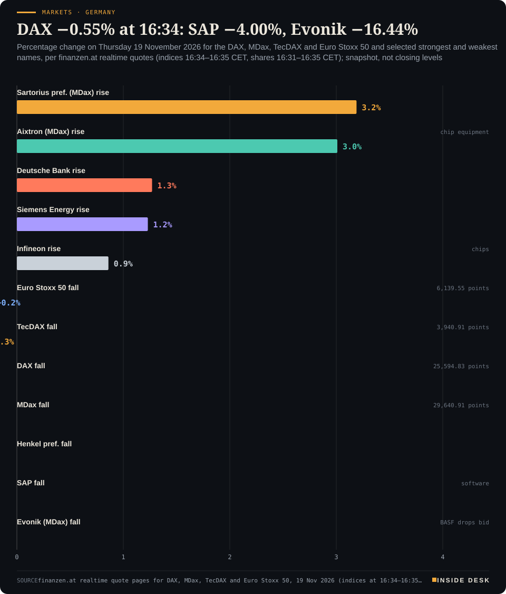
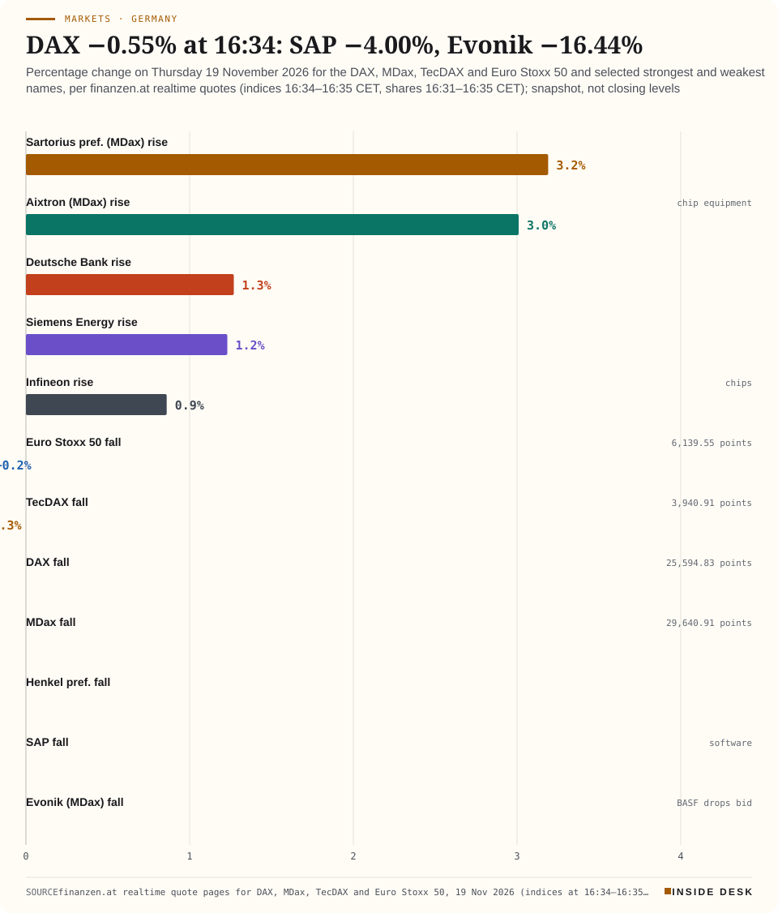

Inside Desk ePaper, Evening ePaper · Thu 19 Nov 2026
Thursday, 19 November 2026Always free
Inside Desk
Evening ePaperPublished 17:30 CET · Berlin
Lead · Money, FX & Committees
Germany's central bank expects inflation to hold near 2.8% until December, then jump when the Tankrabatt ends. The savings rate is the number to check before then.
The Bundesbank says inflation waits for the fuel discount to expire, then rises about half a point. Also: the DAX down 0.55% by 16:34 as SAP and Evonik fell, Shenzhen's pledge on refined fuel against Brent at $92.60, Karlsruhe turns down the BSW, Denmark ratifies its Greenland pact, NICE backs a £100 sponge test, and a Podium vs Print on oil.
On a Thursday of court rulings, summit words and central-bank arithmetic, the useful news came from the machinery underneath: a £100 sponge that shortens a hospital queue, a catastrophe bond priced below guidance, and a fire brigade clearing leaves from the drains.
Geo-economics · p. 6
Markets & Macro · p. 8
Energy & Industry · p. 12
Climate & Weather · p. 19
The day in one sentenceOn a Thursday of court rulings, summit words and central-bank arithmetic, the useful news came from the machinery underneath: a £100 sponge that shortens a hospital queue, a catastrophe bond priced below guidance, and a fire brigade clearing leaves from the drains.
ContentsInside Desk · Evening ePaper19 November 2026
The Bundesbank says inflation waits for the fuel discount to expire, then rises about half a point. Also: the DAX down 0.55% by 16:34 as SAP and Evonik fell, Shenzhen's pledge on refined fuel against Brent at $92.60, Karlsruhe turns down the BSW, Denmark ratifies its Greenland pact, NICE backs a £100 sponge test, and a Podium vs Print on oil.
11 edition pieces · 11 desks · Published 17:30 CET, 19 November 2026
22 ePaper extras, added , 19 November. They appear only in the ePaper and carry their own time.
17:30 Evening ePaper, updated live until 22:30 with an “Updated” time and a Latest page
Sun 10:00 The Sunday Magazine
Berlin time. Every issue is free.
How to read it
Swipe, use the arrow keys or the page strip. Tap any headline for the reading view. Press / to search, t for contents, +/− to zoom. Download the PDF.
LatestInside Desk · Evening ePaper19 November 2026
Latest
Live: this page and the issue are updated until 22:30 Berlin time.
Evening ePaper published. No updates yet.
LeadInside Desk · Evening ePaper19 November 2026
Money, FX & Committees · Lead · 4 min
Germany's central bank expects inflation to hold near 2.8% until December, then jump when the Tankrabatt ends. The savings rate is the number to check before then.
The most useful sentence in German money today was not spoken on a podium. It sat in the Bundesbank’s monthly report, published on Thursday morning, and it had a date in it. Until the end of the year, the central bank wrote, inflation could hover around its current level, because the fuel discount, the Tankrabatt, is still holding prices down1. At the start of the year that discount runs out and several price-raising state measures take effect. “Overall, this could raise the inflation rate by half a percentage point,” the Bundesbank said1.
The current level is 2.8%, the October rate1. Desk arithmetic: half a point on top of 2.8% would put the rate around 3.3%, if nothing else moved. Plenty else will move, and the Bundesbank lists it with the dull honesty of an inventory clerk. Gas tariffs are likely to rise noticeably1. Higher energy and input costs should gradually pass into the prices of other goods and some services1. Food could carry a delayed effect from the summer’s heat and drought, and the recent rise in producer prices for crops is a first sign1. For petrol and heating oil, crude prices matter, but so does refining capacity in the Middle East and in Russia1. The conclusion: “Mainly because of the military conflicts in the Middle East, the upside risks to the inflation outlook continue to dominate”1.
The good half of the report
This is not a gloomy report, and it should not be read as one. The Bundesbank expects the economy to grow more strongly in the fourth quarter, after 0.2% in the summer quarter1,2. State spending on defence and infrastructure is still pushing, industry has more domestic orders and world trade is expanding, so output and exports should pick up1. Low water on key waterways held growth back over the summer, and the bank expects the catch-up to run into the first quarter of 20271. Private consumption, it says, will stay subdued: strong energy price rises weigh on it despite the discount1.
In other words, the economy is getting its paperwork back in order. Your household budget is the part still waiting for its January invoice.
What Berlin has put against it
The coalition has already put two measures on the table: a fuel price cap from 1 January and a cut in electricity tax for 2027, to the European minimum for all consumers, initially for one year1. Both are policy, not price. A cap limits a number on a sign; it does not change what a refinery charges for a barrel. A tax cut lowers a line on your electricity bill; it does not touch the gas tariff the Bundesbank expects to rise1. The final budget vote is due in the week of 24 to 27 November, and that is where the wording will be fixed.
LeadInside Desk · Evening ePaper19 November 2026
The savings side of the ledger
Here is the constructive part, and it is quietly happening in the comparison tables. On Thursday at 09:41 CET, Instabank raised its overnight-account rate to 2.60% from 2.50%; on Wednesday BankB went to 2.66% from 2.60%, and earlier this week Moank and Distingo also moved up3. Verivox, which checks about 800 banks daily, says the market “is in motion because many banks are raising their rates”, with the best offer at up to 4.25%, mostly as a time-limited deal for new customers3.
Desk arithmetic: a regular rate of 2.60% is below October’s 2.8% inflation, and further below the 3.3% the Bundesbank’s half-point would imply. An introductory 4.25% clears both, for as long as the promotion runs. The difference between the two rates on €10,000 is €165 a year before tax. Read the end date of any offer the way you read the Tankrabatt’s.
Why the dollar still matters in Dortmund
Abroad, the day was calmer than Wednesday. The dollar index ended a seven-session rally, and by 15:37 CET the euro had risen 0.2% to $1.1002, back above the $1.10 line it lost this week4,5. US jobless claims rose 1,000 to 203,000, and the Philadelphia Fed’s factory survey fell to a six-month low of 6.3, while its prices-paid index climbed to 58.26. Walmart’s chief executive John Furner said diesel and transport costs “do work their way into cost of goods”7. That is the same chain the Bundesbank describes, told by an American retailer.
For you
Check three dates this week: when the fuel discount ends (at the turn of the year), when any introductory savings rate ends, and when your gas supplier’s next tariff letter is due. None of them is a forecast. All of them are on paper. Nothing here is investment advice.
Geo-economicsInside Desk · Evening ePaper19 November 2026
Geo-economics · Podium vs Print · 2 min
Three presidents promised more refined fuel "for the benefit of all nations". The same day's screens priced the barrel higher and Dutch gas up 3.7%.
Podium
“The three countries plan to increase the production and supply of refined petroleum products for the benefit of all nations. They reaffirmed the importance of stable energy flows.”
Donald Trump, Vladimir Putin and Xi Jinping, joint declaration, Thursday 19 November 2026, Shenzhen
Print$92.60
Brent at $92.60 a barrel, up 0.6%; WTI up 0.6% at $83.77; the Dutch TTF gas contract up 3.7% at €83.87 per megawatt-hour.
European market report, ANSA, Thursday 19 November 2026, 13:35 CET
The podium. Donald Trump, Vladimir Putin and Xi Jinping met for 90 minutes in Shenzhen, their first trilateral talks, and issued a four-point declaration2. Point two is the one with a price attached: “The three countries plan to increase the production and supply of refined petroleum products for the benefit of all nations. They reaffirmed the importance of stable energy flows”1. Before the meeting, Putin had said the conversation would touch on food and energy security2.
The print. The same day’s market report from Milan shows the barrel moving the other way; the report does not tie the move to Shenzhen, and neither does this desk. At 13:35 CET Brent stood at $92.60, up 0.6%, and WTI at $83.77, also up 0.6%; in Amsterdam the TTF gas contract rose 3.7% to €83.87 per megawatt-hour3. Europe’s energy shares fell 0.5% and utilities were lower3.
The gap. The declaration is a plan without numbers: no volumes, no refineries, no dates1. That does not make it worthless. It makes it a statement of intent, which markets price at what it is. The Bundesbank wrote on the same morning that, beyond crude prices, refining capacity in the Middle East and in Russia will matter for German fuel and heating-oil prices, and that upside risks to inflation dominate because of the conflicts in the Middle East4. A pledge on refined products that includes Russia is therefore relevant; it is also, by the Bundesbank’s own list, one of the risks.
For you. If you heat with oil or fill a diesel tank, the number that reaches you is the pump and delivery price, not the communiqué. Watch the barrel and the TTF over the next weeks, not the photograph. Nothing here is investment advice.
Geo-economics · Short item · ePaper extra, added
After Shenzhen, Putin said Ukraine and Europe were not ready to compromise and that Russia had invited EU representatives to Moscow. Kyiv was under drone attack as he spoke.
The Shenzhen declaration has four points: UN reform, more refined petroleum, the immunity of state officials, and a dialogue on nuclear risks2. Ukraine is not one of them2. It arrived instead in the press conferences.
Trump said he and Putin had already had a “long discussion” on the war, and that Putin “and I hope the other side, would like to see an end to that war”1. Putin said Ukraine and Europe were not yet ready to make compromises, and that Russia had invited EU representatives to Moscow to understand Europe’s position better1. Addressing comparisons with Yalta, he said: “Nobody divided up the world at Yalta”1. And: “When it comes to today’s conflicts, the realities on the ground will have to be accepted”1.
The BBC noted that while the talks were under way, and as Putin spoke of being ready for peace, Kyiv was under attack from Russian drones1. Putin also promised a “far more painful” response to Ukrainian strikes on the Crimea bridge1.
Point three of the declaration says the International Criminal Court and similar bodies “must not abuse their jurisdiction”2. Read next to the Yalta line, it is a text about who is answerable to whom. For Europe, the useful habit is the institutional one: an invitation is not a negotiation until there is an agenda, a venue and a mandate on paper.
Geo-economicsInside Desk · Evening ePaper19 November 2026
Geo-economics · Brief · ePaper extra, added
UniCredit and the German government said on Thursday they had agreed terms for the Italian bank’s takeover of Commerzbank, valued at €41 billion1. In a letter to Lars Klingbeil, chief executive Andrea Orcel promised to keep the headquarters in Frankfurt and to keep supporting the Mittelstand1. Klingbeil said the commitments “align with the core concerns of the federal government” and that it now supports “a swift process and an orderly transition of control”1. Berlin still holds around 12% from the financial-crisis bailout; the EU approved the deal on Monday1.
Commerzbank shares rose 1.4% in early trade2. UniCredit hopes for final regulatory approvals this month1. If the deal completes, the proof will be in the loan books, not the letter.
Markets & MacroInside Desk · Evening ePaper19 November 2026
Markets & Macro · 2 min
Europe spent Thursday waiting for a share price in New York. By late afternoon the morning gain was gone, and the day had sorted itself into chip makers, banks, a takeover that will not happen and the defensive names that pay for all of it.
At 16:34 CET the DAX stood at 25,594.83 points, down 0.55% or 141 points7. In the morning it had climbed as high as 25,945.52; at 13:59 it was still only 0.10% lower, and by mid-afternoon it was trading near the day’s low1,7. These are snapshot figures, not the settled close; Xetra trading ends at 17:30. One week ago the index touched a record of 27,001; it has since fallen by almost 5%2. The MDax was down 0.80% at 29,640.91 at 16:35 CET, the TecDAX 0.30% lower and the Euro Stoxx 50 down 0.24% at 6,139.558,9,10.
Markets · GermanyDAX −0.55% at 16:34: SAP −4.00%, Evonik −16.44%Percentage change on Thursday 19 November 2026 for the DAX, MDax, TecDAX and Euro Stoxx 50 and selected strongest and weakest names, per finanzen.at realtime quotes (indices 16:34–16:35 CET, shares 16:31–16:35 CET); snapshot, not closing levels


Bar chart of Thursday 19 November 2026 percentage changes in a late-afternoon snapshot, per finanzen.at realtime quotes (indices at 16:34 to 16:35 CET, shares at 16:31 to 16:35 CET): Sartorius preference shares up 3.19 percent, Aixtron up 3.01, Deutsche Bank up 1.27, Siemens Energy up 1.23, Infineon up 0.86, the Euro Stoxx 50 down 0.24 at 6,139.55 points, the TecDAX down 0.30 at 3,940.91 points, the DAX down 0.55 at 25,594.83 points, the MDax down 0.80 at 29,640.91 points, Henkel preference shares down 2.05, SAP down 4.00 and Evonik down 16.44 percent after BASF dropped its takeover effort. These are intraday snapshot figures, not closes.
Source: finanzen.at realtime quote pages for DAX, MDax, TecDAX and Euro Stoxx 50, 19 Nov 2026 (indices at 16:34–16:35 CET, shares at 16:31–16:35 CET); intraday snapshot, not closing levels; retrieved 19 Nov 2026 · reported figures · CSV
The falling line hides a clean split. Chip makers rose on the eve of Anthropic’s Nasdaq debut, though they gave back part of it: Infineon was up 2.78% at 13:59 and 0.86% by 16:31, Siemens Energy 1.23%, Aixtron 3.01% in the MDax1,7,8. The other side of the ledger was older and duller money. Henkel’s preference shares were down 2.05% and SAP 4.00%, extending its losing run to a fourth day2,7. …
Markets & Macro · Short item · ePaper extra, added
Walmart lifted its full-year outlook on Thursday. Its chief executive spent the interview on diesel.
Walmart reported fiscal third-quarter revenue of $188.84 billion, against $187.27 billion expected by analysts surveyed by LSEG, and adjusted earnings of 65 cents a share, one cent above forecast1. It now expects net sales to grow 4.9% to 5.2% this year, up from 4% to 5%, and adjusted earnings per share of $2.84 to $2.891. Revenue rose 5.2%; net income fell to $4.95 billion from $6.14 billion a year earlier1.
The growth sat in the unglamorous machinery. Global e-commerce sales rose 17%, driven by pickup and delivery from stores; US advertising sales rose 37%; membership fee income rose 17%1. Walmart said it had rolled back prices on nearly 8,000 products1. Comparable US sales excluding fuel rose 2.9%, in line with expectations1.
Chief executive John Furner told CNBC that diesel and transport increases “do work their way into cost of goods”, and that tariff refunds had helped the company offset them1. Finance chief John David Rainey said the fourth quarter was “off to a pretty good start”1.
The quarter is a reminder that a retailer’s margin is mostly logistics. A lorry’s fuel bill reaches the shelf before any speech about prices does. Nothing here is investment advice.
Markets & MacroInside Desk · Evening ePaper19 November 2026
Markets & Macro · Brief · ePaper extra, added
The Philadelphia Fed’s manufacturing index fell to 6.3 in November, a six-month low and well short of the consensus forecast of 20.01. New orders came almost to a halt, although shipments surged and employment kept growing1. The awkward line was prices: the prices-paid index climbed to 58.2 and prices received rose to 47.0, a sign that firms keep passing higher input costs to customers1. More than half expected cost shifts across their industry, and most expected competitors to raise prices1.
Slower orders with faster prices is the combination central banks like least. It arrived on the same morning as US jobless claims of 203,0001. Nothing here is investment advice.
Politics & InstitutionsInside Desk · Evening ePaper19 November 2026
Politics & Institutions · 2 min
The constitutional court threw out the BSW's election challenge unanimously. The arithmetic of the complaint did the rest.
The Federal Constitutional Court has rejected the election challenge brought on behalf of the BSW as inadmissible, in a unanimous decision of its Second Senate published on Wednesday1. Under the official final result of the February 2025 Bundestag election the party took 4.981% of valid second votes; it was 9,529 votes short of the 5% threshold and therefore of seats1. Never has a party failed the threshold so narrowly, tagesschau notes2.
The complaint, brought by four voters including Sahra Wagenknecht, argued that BSW votes had been wrongly declared invalid and mixed up with those of the similarly named Bündnis Deutschland, listed next to it on the ballot, and asked for a “nationwide recount”1,2. The court’s answer is about method rather than sympathy. Hints at possible errors, “anomalies” in precinct results and a multitude of unproven suspicions do not amount to a concrete fact pattern showing an error that changed seats1. A close result, the judges added, does not lower that bar1.
The detail that settles it is a small number. The sworn statements submitted from voters who said they had backed the BSW in districts recording no BSW votes added up to 146 second votes in total1. Even if every one of them were credited to the party, the court said, it would plainly not affect the threshold1. Desk arithmetic: 146 is about 1.5% of the 9,529 missing.
Wagenknecht called it the “election review of a banana republic”2. Macit Karaahmetoğlu (SPD), who chairs the Bundestag’s election review committee, welcomed “clarity” on the recount question, and the Union’s legal spokesman Martin Plum said the procedure itself needs reform because it takes too long2.
Both things can be true. The process that took until November 2026 to close a February 2025 question is slow, and that is worth fixing. …
Politics & Institutions · Short item · ePaper extra, added
Hamburg, Lower Saxony and North Rhine-Westphalia want a federal-state working group on how judges are hired and promoted.
The justice ministers of Germany’s Länder met in Hamburg’s city hall on Thursday for their autumn conference, chaired by Hamburg’s justice senator Anna Gallina (Greens)1. One of the main themes: how to protect the judiciary against extremists1.
“Attacks on the independent judiciary are a real danger to our democracy,” said Lower Saxony’s justice minister Kathrin Wahlmann (SPD)1. North Rhine-Westphalia’s Benjamin Limbach (Greens) added that freedom is “not self-propelling” and stands or falls with a judiciary that decides independently1.
The CDU in Lower Saxony’s state parliament has asked the minister-president to dismiss justice minister Kathrin Wahlmann (SPD)1. “We call on the minister-president to remove the justice minister from office,” said Carina Hermann, the group’s parliamentary manager, at a hastily called press conference on Wednesday1.
The trigger, according to the CDU, is an untrue answer from Wahlmann’s ministry about the handling of investigation files in the case of a prosecutor convicted of corruption; the minister acknowledged it in the legal affairs committee on Wednesday and said she had never seen the reply herself, which her new state secretary had signed while several staff were on leave, the CDU said1. Wahlmann has also faced criticism over costly official trips and the rollout of electronic files1.
Ministers rarely fall over a single letter. They fall over whether anyone can show who read it.
Psychology & BehaviourInside Desk · Evening ePaper19 November 2026
Psychology & Behaviour · 2 min
Linked survey and health records for 91,272 people find no difference in high distress between Asian and European New Zealanders, and a large gap in who gets treated.
A study in the New Zealand Medical Journal, by researchers at the University of Auckland, linked answers to the New Zealand Health Survey from 2011/12 to 2018/19 (91,272 respondents in total) with hospital and prescription records in the national Integrated Data Infrastructure1. Distress was measured with the Kessler K10 scale, with 12 or more out of 40 counted as high; service use meant publicly funded hospital stays for mood and anxiety disorders, or antidepressants and anxiolytics dispensed1.
The headline is a mismatch. After adjustment, there was no meaningful difference in the risk of high psychological distress between Asian New Zealanders and those of sole European ethnicity1. Yet every Asian sub-group was less likely to use mental-health services, with adjusted relative risks between 0.32 and 0.591. Among people who did report high distress, 22.22% of Asian participants had used services, against 48.93% of sole Europeans1.
Splitting the “Asian” category changes the picture again. Indian participants had the highest share with high distress and the most deprivation; New Zealand-born Indian participants had 2.41 times the risk of high distress of those born overseas1. Chinese men were less than half as likely as Chinese women to use services (aRR 0.47), a gap not seen among Indian participants1. Across every sub-group, people who had been unable to see a GP or fill a prescription because of cost or transport were 2.24 to 4.53 times as likely to report high distress1.
The authors are frank about limits. Their “service use” misses GP visits, private care, talking therapies and culturally based help, so some care is uncounted, and they could not measure length of residence1. But the gap remains after adjusting for age, sex, deprivation, birthplace and unmet need, which points, they argue, to structural and cultural barriers1.
Now the annex, the part about what to do with it. The policy lesson travels well beyond New Zealand: a single ethnic box on a form can average a well-served group with a badly served one and report that all is fine. …
Psychology & Behaviour · Short item · ePaper extra, added
A small trial in 66 women finds an added benefit for mindfulness-based cognitive therapy. The brain-wave maps are the least certain part.
Researchers at Ferdowsi University of Mashhad in Iran randomly assigned 66 women with major depressive disorder, all taking the antidepressant citalopram, either to usual care or to an added eight-week course of mindfulness-based cognitive therapy: weekly two-hour group sessions plus daily home meditation1. The study is published in the journal Mindfulness1.
Researchers at Texas A&M’s School of Public Health analysed 9,817 Americans aged 12 to 17 from the 2023 National Survey on Drug Use and Health1. The more heavily teens drank, and the more different ways they used cannabis (smoking, vaping, edibles), the higher their chances of major depression; girls, older teens and multiracial teens were more likely to be depressed regardless of substance use1. The study is in the Journal of Substance Abuse1.
It is a cross-sectional snapshot, so it cannot say which comes first1. The recommendation is practical anyway: lead author Sunghyun Chung says parents, doctors and schools should “screen teens for both issues together”1. One questionnaire instead of two is a small change in a clinic. It may catch a teenager who would otherwise fall between two waiting lists.
Energy & IndustryInside Desk · Evening ePaper19 November 2026
Energy & Industry · 2 min
Friday's day-ahead price is a little lower than Thursday's. A study for the Greens puts a number on why neither is cheap.
Friday’s power is settled. For delivery on Friday 20 November, the German-Luxembourg day-ahead auction averages €214.51 per megawatt hour, according to Fraunhofer ISE’s Energy-Charts, which republishes the Federal Network Agency’s market data1. The cheapest quarter-hour comes at 01:00, at €165.55; the dearest at 15:45, at €259.551. The morning hump is still there, with 08:00 to 09:00 averaging €250.96, but this time the afternoon matches it: every hour from 15:00 to 19:00 averages above €2441.
Desk arithmetic: Friday is 4.6% cheaper than Thursday’s €224.832, and the gap between its cheapest and dearest quarter-hour is €94.00. On SMARD’s own figures, the first 19 delivery days of November average €239.01, about 41% above October’s €169.482.
Energy & Industry · Short item · ePaper extra, added
Europe's largest fully hydrogen-capable gas turbine is running in Emsland. The test that matters is the one nobody photographs: storage.
RWE and Japan’s Kawasaki Heavy Industries have put a 34-megawatt gas turbine into trial operation in Lingen, Lower Saxony, on the site of the Emsland gas power station1. It started on 6 November and, according to RWE, is Europe’s largest fully hydrogen-capable gas turbine1. It can burn natural gas, hydrogen or any mix in between, from zero to 100% hydrogen1. It began on natural gas, with hydrogen to be added step by step1.
The point is the Dunkelflaute, the dark, still stretches when wind and solar deliver little for days and something has to run regardless of the weather1. The hydrogen for the trial comes from electrolysers right next door, part of the GET H2 Nukleus project, powered according to RWE by renewable electricity1. The field test is planned to last several months and will check combustion stability, durability and whether emission limits are met; burning hydrogen can also produce nitrogen oxides, so the system uses water or steam to curb them1.
Two dull caveats do the real work. Hydrogen is currently much more expensive than natural gas, which is why the flexible fuel mix matters economically1. And 34 megawatts says nothing about how long a plant can cover a lull: that depends on the stored fuel, and turning power into hydrogen and back loses usable energy, as the Federal Environment Agency points out1. A turbine is a promise. A full tank is a policy.
Energy & Industry · Brief · ePaper extra, added
The reform of the Renewable Energy Act must be finished before the end of the year to comply with EU state-aid rules; a final decision is expected by mid-December1. Coalition energy experts appear set to keep feed-in tariffs for rooftop systems up to 25 kilowatts, which the economy ministry had wanted to end, and to widen biogas support1,2. The Union still ties the deal to a grid package, so there is no overall agreement yet2.
BSW Solar cites an EWI analysis finding that a typical new family-home system needs support of only 0.8 cents per kilowatt-hour1. The BDI’s Holger Lösch warned that without cost discipline the electricity-tax cut becomes “a bridge to nowhere”1. The DNR’s Kai Niebert said about 1.5 million hectares already grow energy crops for biogas1. Every side has a figure. The deadline is the only one that binds.
Money, FX & CommitteesInside Desk · Evening ePaper19 November 2026
Money, FX & Committees · Short item · ePaper extra, added
When a Festgeld matures, some contracts roll it over at whatever rate the bank offers that day. The deadline to stop it can fall before the maturity date.
A fixed-term deposit is a promise with an end date. What happens on that date is set by the contract, not by the saver’s memory. Some banks pay the money and interest to a reference account; others offer to reinvest; some contracts renew automatically if the customer does not decide in time1. The original rate need not apply to the new term: the bank can use the rate it offers on the day of reinvestment1.
The consumer site Verbraucherschutzforum puts a number on it, with a freely chosen example rather than any bank’s terms. €30,000 for twelve months at 3.5% earns €1,050 before tax; rolled over for another year at 1.5%, it earns €4501. That is €600 less, and the money is locked again, because classic Festgeld normally cannot be cancelled early1.
The detail most people miss: an instruction or notice deadline can expire before the maturity date, so reacting on the day may be too late1. Deposit insurance, up to €100,000 per depositor per bank in the EU, protects the money, not the rate1.
The moment is apt. Verivox reported on Thursday that many banks are raising overnight rates, with offers up to 4.25%, mostly for new customers2. Find your maturity date, then the notice date before it, and put both in the calendar. Nothing here is investment advice.
Money, FX & Committees · Brief · ePaper extra, added
Initial US claims for unemployment benefits rose 1,000 to 203,000 in the week to 14 November, the Labor Department said at 14:30 CET; economists polled by Reuters had expected 197,0001. The more telling line was continuing claims, up 70,000 to 1.763 million in the week to 7 November1. Before seasonal adjustment, Michigan added about 39,000 of the 43,000 national increase in people collecting benefits2. A year earlier, the same week saw 222,000 new claims2.
Layoffs remain low; finding the next job is what takes longer. For the Fed, which held rates at 3.75%–4.00% in October, a steady labour market leaves inflation as the main argument1. Nothing here is investment advice.
Ordinary & Inherited LifeInside Desk · Evening ePaper19 November 2026
Ordinary & Inherited Life · 2 min
Berlin now has a national strategy for teaching you about money. The consumer federation's reply on Thursday was about the part a strategy cannot do by itself: checking the teachers.
On Wednesday the federal cabinet adopted Germany’s first national financial-education strategy: almost 40 measures, with more information on investing on the stock market, on pensions and on protection against financial fraud2. The former World Cup winner Philipp Lahm and the actor Tomomi Themann are to act as ambassadors2. Finance Minister Lars Klingbeil (SPD) said financial education was a question of fairness2.
The detail is thinner than the headline. According to Cash., the measures sit in seven fields, among them pensions, capital-market skills and entrepreneurial skills, and the programme is to run for about five years1. The September draft had spoken of more than 30 measures in the same fields1. A full official list was not available at Cash.’s deadline1. From 2027 a “Task Force Finanzbildung”, chaired jointly by the finance ministry and the Bundesbank, is to steer it, with the Länder sending representatives1.
The question on Thursday
The consumer federation vzbv answered on Thursday, and its point is the dull, important one. “Entscheidend ist nun die Umsetzung,” said Anke Wolf, head of its consumer-education team: what matters now is delivery3. If financial-industry companies may also offer courses under the strategy, she argued, it needs binding quality standards and an effective review of the material to rule out influence; “a voluntary code of conduct is not enough”3. She also said schools play too small a role in the strategy so far, although they are the most important place to reach children regardless of background3.
The cooperative banks’ BVR welcomed the decision and asked for measurable success criteria and attention to possible conflicts of interest1. On the conflicts, then, the bankers and the consumer advocates agree1.
What it means for you
Nothing changes in your account this week. …
Ordinary & Inherited Life · Short item · ePaper extra, added
If you cashed in a Debeka life or pension policy, a little-noticed deduction may be worth a check before New Year's Eve.
When you cancel a Debeka life or pension insurance early, the insurer pays out the surrender value and, besides the usual cancellation costs, deducts a charge that depends on the capital markets1. The consumer federation vzbv and the Hamburg consumer centre consider the clause behind it opaque and therefore invalid, and the vzbv has brought a class action to have a court say so1. That is the consumer advocates’ position; the court has not yet ruled.
Ordinary & Inherited Life · Brief · ePaper extra, added
The European Commission’s Digital Omnibus would simplify data-protection rules including the GDPR; Parliament and member states are now debating it1. On Thursday the vzbv said the proposals mainly create legal uncertainty that big platforms can exploit, and, with other European consumer and digital-rights groups, sent an open letter to the European Parliament1. “Keine weitreichenden Ausnahmen, keine Schutzlücken,” said its head, Ramona Pop: no sweeping exemptions, no gaps in protection1.
Its own survey, run for it in October 2025 among 1,000 internet users aged 16 and over, found 87% think it very or fairly important to be able to trust a company with their personal data before using its services1. The constructive bit: the vzbv wants machine-readable privacy signals, so you set your cookie choice once and sites must respect it1. Fewer banners, same protection. That is a simplification worth the name.
Tech & ComputeInside Desk · Evening ePaper19 November 2026
Tech & Compute · 2 min
Google's newest model scores above its own flagship on one independent index and costs less. The harder question is who chooses the model on your invoice.
Google released Gemini 4 Neon on Wednesday, and the number to keep is not a benchmark but a tariff: $3 per million input tokens, $0.15 per million cached input tokens, and $15 per million output tokens, with a context window of one million tokens1. It is rolling out in the Gemini API, in Gemini for business, and to paying Pro and Ultra subscribers in the Gemini app and the Antigravity coding tool1.
Google’s own claims are generous, as launch claims are. Neon scores 61 on the Artificial Analysis Intelligence Index at its highest thinking level, third overall, and ranks first on the same firm’s Coding Agent Index at 58.6, Google says1. At its default setting it costs, by Google’s account, 32% less per task than Carbon, the model it calls its most capable1,2. The Register lays out the awkward family tree: on that index Neon’s 61 beats Carbon’s 60, Hydrogen’s 54 and Argon’s 50, while Carbon and Argon are priced at $4 and $20 per million input and output tokens, non-discounted from next month2.
Desk arithmetic: at list prices, one million tokens in and one million out costs $18 on Neon and $24 on Carbon or Argon, a quarter less, before caching.
The menu problem
The contrarian point is The Register’s. Google’s chemical names do not suggest a hierarchy, and the company appears content with that2. Antigravity’s Orchestrator can swap models mid-task, for example letting Carbon write a plan and handing the work to the thriftier Hydrogen1,2. Model pinning exists, The Register notes, “for those who know what they want”2. Google’s blog section “Where Neon sits in the Gemini 4 family” says Carbon handles the hardest long-horizon projects, Hydrogen fast everyday work, and Neon “balances depth and efficiency”1.
Tech & Compute · Short item · ePaper extra, added
Two malicious releases of a package with about 200,000 monthly downloads ran their payload at Python start-up, whether or not you imported it.
Attackers published two malicious versions of Microsoft’s official Agent Framework package on PyPI, the Python package index, on 17 November1. The toolkit, Microsoft’s open-source kit for building and coordinating AI agents, has roughly 200,000 monthly downloads1. Versions 1.26.1 and 1.26.2 carried a credential stealer that ran automatically during normal Python start-up, even when the framework itself was never imported, while keeping the framework working by depending on the legitimate 1.26.0 core1.
Tech & Compute · Brief · ePaper extra, added
From March to October, OpenAI’s estimated success rate for agents completing research tasks that take a human two to four hours rose from 23% to 46%, and for four-to-eight-hour tasks from 13% to 35%, according to an internal report published on Wednesday1. The spread by task is the real finding: 79% for monitoring training runs, 35% for launching them, 25% for writing inference and serving code1. OpenAI itself calls the uplift “jagged” and says humans remain central1.
At API list prices, the median researcher’s daily agent use reached $2,400 in October, up 62% from September; at the 90th percentile, $23,0001. These are self-reported internal measurements, not an audit. Still, a lab publishing its own meter readings is a habit worth encouraging; the next useful step is someone else reading the meter.
Health & CareInside Desk · Evening ePaper19 November 2026
Health & Care · 2 min
England's health-technology assessor backs two capsule sponge tests in GP surgeries and community centres. The novelty is not the gadget but the queue it shortens.
England’s National Institute for Health and Care Excellence has recommended two capsule sponge tests, Cytosponge and EndoSign, for detecting Barrett’s oesophagus and oesophageal cancer in primary care and community settings, Pulse reported on Thursday1. The patient swallows a small capsule on a string; it dissolves in the stomach, leaving a sponge that expands over about seven minutes and is then pulled back up, collecting cells from the lining of the gullet on the way1.
The target group is deliberately narrow. The tests are an option for people with persistent gastro-oesophageal reflux and several risk factors who do not need an urgent suspected-cancer referral1. If the result suggests cancer or Barrett’s oesophagus, the next step is still an endoscopy1. The sponge does not replace the camera; it decides who should wait for it.
That is where the money and the time sit. The tests cost around £100 each, need no sedation, and can be given by one trained health professional in a GP practice or a community diagnostic centre1. NICE’s committee said they will help reduce high demand on NHS endoscopy services, and noted that in some areas people with Barrett’s oesophagus are not being checked as often as guidance recommends; the sponge can also serve as a monitoring tool for them1. An NHS study of EndoSign covered 2,000 high-risk patients in GP surgeries and diagnostic hubs in the East of England, Lancashire and South Cumbria, and Wessex1. Studies show 95 in every 100 people manage to swallow the capsule, after one or more attempts1.
“Oesophageal cancer is very difficult to treat when it is diagnosed at a later stage, so identifying people sooner is really important,” said Professor Jonathan Benger, NICE’s chief executive1. These are the first recommendations from NICE’s National HealthTech Access Programme1.
Health & Care · Short item · ePaper extra, added
Regeneron's Livsayis cuts a key immune protein and is dosed every three months. The trial gain is real, measured in points, and comes with a boxed warning.
The US Food and Drug Administration has approved Regeneron’s Livsayis (cemdisiran) for adults with generalised myasthenia gravis who test positive for anti-acetylcholine-receptor antibodies, the commonest form of the disease, the company said overnight1. Myasthenia gravis is a rare autoimmune illness in which antibodies disrupt the signal between nerve and muscle, bringing weakness that can affect speech, swallowing, vision and breathing1.
Livsayis is a small interfering RNA that lowers circulating levels of the complement protein C5, a driver of the damage1. It is the first siRNA drug approved for the disease and the only approved treatment given under the skin four times a year1.
The evidence is a single phase 3 trial, NIMBLE. At 24 weeks, scores on a daily-activities scale improved by 4.5 points on the drug against 2.2 on placebo; 76.6% of patients improved by at least three points, against 44.1%1. On a clinician-scored muscle test the gain was 4.2 points against 1.51.
The label carries a boxed warning for serious meningococcal infections, as other C5-blocking medicines do, and the drug is available only through a restricted safety programme1. The most common side effects were injection-site reactions, viral infections and urinary tract infections1.
For European patients the calendar matters more than the headline: an application is under review in the EU, with a decision expected in the second half of 2027, according to Regeneron1. Four injections a year instead of frequent infusions is the kind of change that shows up not in a chart but in a diary.
Health & CareInside Desk · Evening ePaper19 November 2026
Health & Care · Brief · ePaper extra, added
Germany’s hospital congress, the Deutscher Krankenhaustag, ended on Thursday after four days and about 2,000 visitors, with one question louder than the rest: who pays for the integrated emergency centres (INZ) that the emergency-care reform creates1? The reform was due to be discussed in the Bundesrat the following day1.
The hospital operators’ position, as the German Hospital Federation (DKG) sums it up, is that the reform cannot take effect in its current form while INZ financing is unresolved; how regional committees assign the centres also remains open1. The DKG wants a binding settlement, either a protocol note or a mediation procedure, and if mediation is needed it should finish this year, because financial help for hospitals is tied to the reform1.
A reform is a promise; a financing line is the contract. Watch which of the two the Länder sign.
Security & OrderInside Desk · Evening ePaper19 November 2026
Security & Order · 2 min
Putin answered the Kerch strikes with a promise of a "far more painful" response. In Berlin, the coalition of the willing talked air defence, energy and money.
Vladimir Putin used his press conference after meeting Donald Trump and Xi Jinping in Shenzhen to close a door. “After the strikes on the Crimean Bridge, we will not negotiate,” he said, adding that Russia’s response would be “far more painful than Kyiv’s attack on the bridge”1. He claimed he had been considering local ceasefires until the road bridge was destroyed1. The bridge has now been hit three times in a week, the latest attack overnight against the rail crossing, which Ukraine’s military said was carried out with domestically made Neptune missiles; train services were halted1.
On the same afternoon a series of explosions hit Kyiv. City authorities said a 26-year-old man was killed and five people were injured, and a projectile struck behind the Dutch embassy, causing minor damage but no injuries, according to the Dutch foreign minister Tom Berendsen1.
The other room was in Berlin. Volodymyr Zelenskyy arrived for the meeting of the coalition of the willing saying “more than 40 partners” would be represented, including the US president’s team, and that Ukraine’s priorities were air defence, energy and financial support, the diplomatic track and security guarantees2. The US envoys Steve Witkoff and Jared Kushner briefed Friedrich Merz and his national security adviser Günter Sautter on the China talks; Kushner called the meeting “very productive” and said they were preparing “for the next round of negotiations”2.
Two pictures, then, as the Guardian put it: three leaders in Shenzhen, a crowded family photo of allies in Berlin2. Neither picture ends a war. But only one of them comes with a shopping list of interceptors, power-grid repairs and budget lines, and that is the list worth following. If you want to know where this goes, read the delivery schedules, not the press-conference adjectives.
Security & Order · Short item · ePaper extra, added
Underwater access and a missile-defence permit for the US; for Copenhagen, a framework instead of threats, and a trust deficit still to repay.
The Folketing on Thursday consented to the agreement between Greenland, Denmark and the United States that amends and supplements the 1951 accord on the defence of Greenland1. The US ambassador, Ken Howery, put the vote at 109-02. Greenland’s parliament, the Inatsisartut, had approved it on 3 November; the government concluded the deal on 22 September in New York, and can now notify Washington that both parliaments have consented, which completes ratification1.
According to the Guardian, the deal gives the US underwater access to Greenland and specific permission to build a missile-defence system, recognises Greenland as an equal partner, and stipulates that Greenland would remain in Nato if it became fully independent2.
Security & Order · Brief · ePaper extra, added
“This afternoon, a projectile struck the area behind the Dutch embassy in Kyiv,” Dutch foreign minister Tom Berendsen said on Thursday; staff were unharmed and the building suffered minor damage, and officials are investigating what happened1. Ukraine’s foreign minister Andrii Sybiha said Russian attacks on Kyiv had “once again damaged a diplomatic mission” and urged condemnation1.
Dutch media stressed it was not clear whether the embassy was the target1. The timing is awkward all the same: on Wednesday the Russian embassy in the Netherlands had asked whether The Hague was “openly joining the conflict”, after Dutch-headquartered Destinus said its missiles were used against the Kerch bridge1.
Investigations take longer than headlines. Let this one finish before anyone draws a line from one to the other.
Climate & WeatherInside Desk · Evening ePaper19 November 2026
Climate & Weather · 2 min
Three days of steady rain have filled cellars, toppled trees and sent cars aquaplaning off motorways. Most of the damage started in a gutter.
North Rhine-Westphalia has had three days of steady rain, and on Thursday it showed. According to the German Weather Service (DWD), 30 to 50 litres a square metre have fallen over the past three days, DerWesten reported in its live blog1. Cellars have flooded, trees have come down and the first motorway crashes have been blamed on standing water1.
The morning commute in Aachen stopped not on the tracks but under them. At 07:37 CET the main station was at a standstill: the trains were ready, but the pedestrian tunnel to the platforms had filled with water, so passengers could not reach them1. The fire brigade finished pumping shortly before 08:00 and trains resumed soon after, with delays expected to linger, Deutsche Bahn said1.
Essen’s fire brigade counted 46 rain-related call-outs between 16:00 on Wednesday and 08:00 on Thursday: flooded streets, underpasses full of water and a fallen tree1. The common cause was mundane. Street drains blocked by leaves were often behind the larger pools on the roads, and crews repeatedly closed stretches briefly to clear them1. At one medical practice, rainwater pushed in from the entrance and the electricity had to be switched off for a while1.
On the A2 towards Dortmund, between Vlotho West and Herford Ost, two crashes followed each other within a short time; a 21-year-old’s car overturned after aquaplaning and two drivers were lightly injured1. On the A45 near Dortmund a car skidded on the wet overtaking lane on Wednesday evening and hit a lorry, which broke through the central barrier; the carriageway towards Hanover was closed for hours1.
It is not over. The DWD’s continuous-rain warning for the Aachen area runs until 22:00 CET on Friday, with 40 to 60 litres a square metre expected and up to 70 where clouds pile against the hills1. In the Ruhr, gusts of up to 70 km/h were forecast until 20:00 CET on Thursday1. For you, the useful work is small and local: the gully in front of your house, the downpipe from your roof, the light well of your cellar. Climate adaptation is often a rake.
Climate & Weather · Short item · ePaper extra, added
Forecasters warn of floods from Quang Tri to Quang Ngai until Sunday, while the north turns cold enough to worry farmers.
Vietnam’s National Centre for Hydro-Meteorological Forecasting has warned that rivers from southern Quang Tri to Quang Ngai could flood between 19 and 22 November, DTiNews reported on Thursday1. River levels in Hue are expected to reach warning levels one to two, and those in southern Quang Tri, Danang and Quang Ngai around level one; the flood-disaster risk is rated at level one1.
The warning is about what is coming, not yet what has happened. On Thursday river levels were still below warning level one1. Between 07:00 and 15:00 local time, 54.2 mm of rain fell at Kim Son reservoir in Ha Tinh and 35.8 mm at Quang Minh in Quang Tri1. …
Climate & Weather · Brief · ePaper extra, added
Versicherungskammer Bayern (VKB), a German public-law insurance group, has secured a €200 million catastrophe bond covering earthquake, hail, flood and windstorm losses in Germany for three years from 1 January 20271,2. It had first sought €175 million1.
The price tells the story. Investors will receive a risk spread of 2.75% a year, against initial guidance of 3% to 3.25%, on notes with an expected loss of 1.68%1. The bond it replaces, issued in 2023, paid 5% on an expected loss of 0.81%; Artemis puts the multiple at almost 6.2 times expected loss then and about 1.64 times now1. The new cover also attaches lower down, so it pays out sooner1.
Cheap reinsurance does not make hail milder. It means capital is plentiful this winter, and that is the time to buy protection, not to cancel it.
Charts and dataInside Desk · Evening ePaper19 November 2026
Charts and data
Energy · PowerNovember so far €239.01 a MWh, 41% above OctoberGermany/Luxembourg day-ahead price, daily average by delivery day, € per MWh; latest on SMARD: Thursday 19 Nov €224.83. Desk arithmetic: 1–19 Nov averages €239.01, October €169.48
Line chart of the daily average German-Luxembourg day-ahead electricity price from 1 September to 19 November 2026, in euros per megawatt hour. Prices mostly ran between about €100 and €210 in September and October, climbed above €250 from late October, peaked at €351.48 on Tuesday 10 November, fell to €139.70 on Sunday 15 November and €146.25 on Wednesday 18 November, and stand at €224.83 for the latest delivery day, Thursday 19 November.
Source: Bundesnetzagentur | SMARD.de day-ahead DE-LU daily averages of quarter-hourly prices, delivery days 1 Sep to 19 Nov 2026 (latest available on SMARD: Thursday 19 Nov €224.83; Friday 20 Nov not yet published there), retrieved 19 Nov 2026, 16:37 CET · CC BY 4.0 · CSV
Latest values
Series
Value
Date
Chart
Day-ahead DE-LU
224.83
19 Nov 2026
November so far €239.01 a MWh, 41% above October
Last data point of each series in the charts above, from the Inside Desk data archive. Sources under each chart.
Back pageInside Desk · Evening ePaper19 November 2026
Before you close the tab
The day in one sentence
On a Thursday of court rulings, summit words and central-bank arithmetic, the useful news came from the machinery underneath: a £100 sponge that shortens a hospital queue, a catastrophe bond priced below guidance, and a fire brigade clearing leaves from the drains.
One thing you can do this week
Before the next downpour, spend five minutes outside your front door with a pair of gloves: lift the leaves off the drain grille, look into the downpipe, check the light well of the cellar. In Essen on Wednesday night, blocked drains were behind many of the flooded streets. The cheapest flood defence in Germany is a rake used on a dry afternoon.
A habit, not advice.
What went right
New Zealand's Department of Conservation says the first takahē chick has hatched at the Onetahua Restoration Project on Farewell Spit, at the top of the South Island 1. Eight of the threatened flightless birds were moved in May into a 2,000-hectare habitat behind a 4 km predator-resistant fence; the parents were not an established pair, and the chick, hatched in October, is now about six weeks old 1. "It's about six weeks old now, which is great that it's survived to this stage," said DOC's Ross Trotter 1. One nest washed away and one egg was infertile, and the trapping goes on 1. Conservation rarely arrives as a breakthrough; it arrives as a fence, a trap line and one chick that made it past week six.
In euros at home
The average additional contribution rate in Germany's statutory health insurance stays at 2.9% in 2027, unchanged from this year, as published in the Federal Gazette on 30 October; each fund sets its own rate, which may be higher or lower 2. Desk arithmetic: on a gross salary of €3,500 a month, the employee's half of 2.9% under the usual equal split is €50.75 a month. A fund charging 0.3 points above the average would cost the employee a further €5.25 a month, or €63 a year. The letter from your own fund in December is the figure that counts.
Desk arithmetic on the cited figures.
Small words
Expected loss
In a catastrophe bond, the expected loss is the modelled share of the investors' money that disasters would eat in an average year. The spread investors are paid is set against it: tonight's Bavarian bond pays 2.75% on an expected loss of 1.68%, about 1.6 times. When that multiple shrinks, insurance capital is plentiful and cover is cheap.
Commentary for information only. Not investment, legal, tax, medical or political advice. Inside Desk is free and reader-supported. Every number is sourced in the piece it appears in.
This issue has been updated.
All articles in this edition
Money, FX & Committees · 4 min read
Half a point in January: the Bundesbank reads the fuel discount's expiry date
Germany's central bank expects inflation to hold near 2.8% until December, then jump when the Tankrabatt ends. The savings rate is the number to check before then.
The most useful sentence in German money today was not spoken on a podium. It sat in the Bundesbank’s monthly report, published on Thursday morning, and it had a date in it. Until the end of the year, the central bank wrote, inflation could hover around its current level, because the fuel discount, the Tankrabatt, is still holding prices down1. At the start of the year that discount runs out and several price-raising state measures take effect. “Overall, this could raise the inflation rate by half a percentage point,” the Bundesbank said1.
The current level is 2.8%, the October rate1. Desk arithmetic: half a point on top of 2.8% would put the rate around 3.3%, if nothing else moved. Plenty else will move, and the Bundesbank lists it with the dull honesty of an inventory clerk. Gas tariffs are likely to rise noticeably1. Higher energy and input costs should gradually pass into the prices of other goods and some services1. Food could carry a delayed effect from the summer’s heat and drought, and the recent rise in producer prices for crops is a first sign1. For petrol and heating oil, crude prices matter, but so does refining capacity in the Middle East and in Russia1. The conclusion: “Mainly because of the military conflicts in the Middle East, the upside risks to the inflation outlook continue to dominate”1.
The good half of the report
This is not a gloomy report, and it should not be read as one. The Bundesbank expects the economy to grow more strongly in the fourth quarter, after 0.2% in the summer quarter1,2. State spending on defence and infrastructure is still pushing, industry has more domestic orders and world trade is expanding, so output and exports should pick up1. Low water on key waterways held growth back over the summer, and the bank expects the catch-up to run into the first quarter of 20271. Private consumption, it says, will stay subdued: strong energy price rises weigh on it despite the discount1.
In other words, the economy is getting its paperwork back in order. Your household budget is the part still waiting for its January invoice.
What Berlin has put against it
The coalition has already put two measures on the table: a fuel price cap from 1 January and a cut in electricity tax for 2027, to the European minimum for all consumers, initially for one year1. Both are policy, not price. A cap limits a number on a sign; it does not change what a refinery charges for a barrel. A tax cut lowers a line on your electricity bill; it does not touch the gas tariff the Bundesbank expects to rise1. The final budget vote is due in the week of 24 to 27 November, and that is where the wording will be fixed.
The savings side of the ledger
Here is the constructive part, and it is quietly happening in the comparison tables. On Thursday at 09:41 CET, Instabank raised its overnight-account rate to 2.60% from 2.50%; on Wednesday BankB went to 2.66% from 2.60%, and earlier this week Moank and Distingo also moved up3. Verivox, which checks about 800 banks daily, says the market “is in motion because many banks are raising their rates”, with the best offer at up to 4.25%, mostly as a time-limited deal for new customers3.
Desk arithmetic: a regular rate of 2.60% is below October’s 2.8% inflation, and further below the 3.3% the Bundesbank’s half-point would imply. An introductory 4.25% clears both, for as long as the promotion runs. The difference between the two rates on €10,000 is €165 a year before tax. Read the end date of any offer the way you read the Tankrabatt’s.
Why the dollar still matters in Dortmund
Abroad, the day was calmer than Wednesday. The dollar index ended a seven-session rally, and by 15:37 CET the euro had risen 0.2% to $1.1002, back above the $1.10 line it lost this week4,5. US jobless claims rose 1,000 to 203,000, and the Philadelphia Fed’s factory survey fell to a six-month low of 6.3, while its prices-paid index climbed to 58.26. Walmart’s chief executive John Furner said diesel and transport costs “do work their way into cost of goods”7. That is the same chain the Bundesbank describes, told by an American retailer.
For you
Check three dates this week: when the fuel discount ends (at the turn of the year), when any introductory savings rate ends, and when your gas supplier’s next tariff letter is due. None of them is a forecast. All of them are on paper. Nothing here is investment advice.
Desk comment A subsidy has a start date and an end date. Budget for the second one.
Podium vs Print: "increase the production" and Brent at $92.60
Three presidents promised more refined fuel "for the benefit of all nations". The same day's screens priced the barrel higher and Dutch gas up 3.7%.
Podium
“The three countries plan to increase the production and supply of refined petroleum products for the benefit of all nations. They reaffirmed the importance of stable energy flows.”
Donald Trump, Vladimir Putin and Xi Jinping, joint declaration, Thursday 19 November 2026, Shenzhen
Print$92.60
Brent at $92.60 a barrel, up 0.6%; WTI up 0.6% at $83.77; the Dutch TTF gas contract up 3.7% at €83.87 per megawatt-hour.
European market report, ANSA, Thursday 19 November 2026, 13:35 CET
The podium. Donald Trump, Vladimir Putin and Xi Jinping met for 90 minutes in Shenzhen, their first trilateral talks, and issued a four-point declaration2. Point two is the one with a price attached: “The three countries plan to increase the production and supply of refined petroleum products for the benefit of all nations. They reaffirmed the importance of stable energy flows”1. Before the meeting, Putin had said the conversation would touch on food and energy security2.
The print. The same day’s market report from Milan shows the barrel moving the other way; the report does not tie the move to Shenzhen, and neither does this desk. At 13:35 CET Brent stood at $92.60, up 0.6%, and WTI at $83.77, also up 0.6%; in Amsterdam the TTF gas contract rose 3.7% to €83.87 per megawatt-hour3. Europe’s energy shares fell 0.5% and utilities were lower3.
The gap. The declaration is a plan without numbers: no volumes, no refineries, no dates1. That does not make it worthless. It makes it a statement of intent, which markets price at what it is. The Bundesbank wrote on the same morning that, beyond crude prices, refining capacity in the Middle East and in Russia will matter for German fuel and heating-oil prices, and that upside risks to inflation dominate because of the conflicts in the Middle East4. A pledge on refined products that includes Russia is therefore relevant; it is also, by the Bundesbank’s own list, one of the risks.
For you. If you heat with oil or fill a diesel tank, the number that reaches you is the pump and delivery price, not the communiqué. Watch the barrel and the TTF over the next weeks, not the photograph. Nothing here is investment advice.
Desk comment A refinery is not built in a communiqué. Count the barrels, not the signatures.
"Realities on the ground": Putin's Yalta line and an invitation to the EU
After Shenzhen, Putin said Ukraine and Europe were not ready to compromise and that Russia had invited EU representatives to Moscow. Kyiv was under drone attack as he spoke.
The Shenzhen declaration has four points: UN reform, more refined petroleum, the immunity of state officials, and a dialogue on nuclear risks2. Ukraine is not one of them2. It arrived instead in the press conferences.
Trump said he and Putin had already had a “long discussion” on the war, and that Putin “and I hope the other side, would like to see an end to that war”1. Putin said Ukraine and Europe were not yet ready to make compromises, and that Russia had invited EU representatives to Moscow to understand Europe’s position better1. Addressing comparisons with Yalta, he said: “Nobody divided up the world at Yalta”1. And: “When it comes to today’s conflicts, the realities on the ground will have to be accepted”1.
The BBC noted that while the talks were under way, and as Putin spoke of being ready for peace, Kyiv was under attack from Russian drones1. Putin also promised a “far more painful” response to Ukrainian strikes on the Crimea bridge1.
Point three of the declaration says the International Criminal Court and similar bodies “must not abuse their jurisdiction”2. Read next to the Yalta line, it is a text about who is answerable to whom. For Europe, the useful habit is the institutional one: an invitation is not a negotiation until there is an agenda, a venue and a mandate on paper.
Appears only in the ePaper · Commentary for information only. Not advice.
Geo-economics · Brief · ePaper extra, added
Frankfurt stays the address: Berlin stops resisting UniCredit's Commerzbank bid
Finance Minister Klingbeil said UniCredit's commitments match the government's core concerns and backed an orderly transfer of control.
UniCredit and the German government said on Thursday they had agreed terms for the Italian bank’s takeover of Commerzbank, valued at €41 billion1. In a letter to Lars Klingbeil, chief executive Andrea Orcel promised to keep the headquarters in Frankfurt and to keep supporting the Mittelstand1. Klingbeil said the commitments “align with the core concerns of the federal government” and that it now supports “a swift process and an orderly transition of control”1. Berlin still holds around 12% from the financial-crisis bailout; the EU approved the deal on Monday1.
Commerzbank shares rose 1.4% in early trade2. UniCredit hopes for final regulatory approvals this month1. If the deal completes, the proof will be in the loan books, not the letter.
Appears only in the ePaper · Commentary for information only. Not advice.
Markets & Macro · 2 min read
Minus 0.55% at 16:34: chips up, SAP and Evonik down, the DAX slipping
Europe spent Thursday waiting for a share price in New York. By late afternoon the morning gain was gone, and the day had sorted itself into chip makers, banks, a takeover that will not happen and the defensive names that pay for all of it.
At 16:34 CET the DAX stood at 25,594.83 points, down 0.55% or 141 points7. In the morning it had climbed as high as 25,945.52; at 13:59 it was still only 0.10% lower, and by mid-afternoon it was trading near the day’s low1,7. These are snapshot figures, not the settled close; Xetra trading ends at 17:30. One week ago the index touched a record of 27,001; it has since fallen by almost 5%2. The MDax was down 0.80% at 29,640.91 at 16:35 CET, the TecDAX 0.30% lower and the Euro Stoxx 50 down 0.24% at 6,139.558,9,10.
Markets · GermanyDAX −0.55% at 16:34: SAP −4.00%, Evonik −16.44%Percentage change on Thursday 19 November 2026 for the DAX, MDax, TecDAX and Euro Stoxx 50 and selected strongest and weakest names, per finanzen.at realtime quotes (indices 16:34–16:35 CET, shares 16:31–16:35 CET); snapshot, not closing levels
Bar chart of Thursday 19 November 2026 percentage changes in a late-afternoon snapshot, per finanzen.at realtime quotes (indices at 16:34 to 16:35 CET, shares at 16:31 to 16:35 CET): Sartorius preference shares up 3.19 percent, Aixtron up 3.01, Deutsche Bank up 1.27, Siemens Energy up 1.23, Infineon up 0.86, the Euro Stoxx 50 down 0.24 at 6,139.55 points, the TecDAX down 0.30 at 3,940.91 points, the DAX down 0.55 at 25,594.83 points, the MDax down 0.80 at 29,640.91 points, Henkel preference shares down 2.05, SAP down 4.00 and Evonik down 16.44 percent after BASF dropped its takeover effort. These are intraday snapshot figures, not closes.
Source: finanzen.at realtime quote pages for DAX, MDax, TecDAX and Euro Stoxx 50, 19 Nov 2026 (indices at 16:34–16:35 CET, shares at 16:31–16:35 CET); intraday snapshot, not closing levels; retrieved 19 Nov 2026 · reported figures · CSV
The falling line hides a clean split. Chip makers rose on the eve of Anthropic’s Nasdaq debut, though they gave back part of it: Infineon was up 2.78% at 13:59 and 0.86% by 16:31, Siemens Energy 1.23%, Aixtron 3.01% in the MDax1,7,8. The other side of the ledger was older and duller money. Henkel’s preference shares were down 2.05% and SAP 4.00%, extending its losing run to a fourth day2,7. Desk arithmetic: the four biggest risers in the chart averaged a gain of about 2.2%; the index still sat below Wednesday’s close.
The largest single move had nothing to do with chips. BASF said it had ended its efforts to take over Evonik, citing the rejection of two non-binding cash offers11,12. Evonik’s shares fell by as much as 23% in the afternoon and were down 16.44% at €18.20 at 16:35 CET8,11.
Banks had their own reason. Commerzbank rose 1.4% and UniCredit 1.8% in early trade after Berlin and the Italian bank agreed on the main points of the takeover3; by 16:31 Commerzbank had slipped 0.13% into the red, while Deutsche Bank was still up 1.27%7. In Milan, UniCredit was up 2.1% and the index 0.5% at 13:35 CET, the best in Europe; London was down 0.4%6. Switzerland lagged because its heavy, defensive names fell, Novartis among them1,4.
New York opened in the same two minds. At 16:00 CET the Nasdaq Composite was 1.46% higher at 24,787.73 and the S&P 500 up 0.75% at 7,378.46, while the Dow was flat at 50,191.915. Walmart raised its full-year outlook; jobless claims edged up to 203,0005.
A record listing is one invoice, paid once. The quarterly reports of the companies that sell it chips are the invoices that come back. Nothing here is investment advice.
Desk comment An index that barely moves is not a market that did nothing. It is several markets cancelling out.
Markets & Macro · Short item · ePaper extra, added
8,000 price rollbacks and a higher outlook: Walmart sells the cheap basket
Walmart lifted its full-year outlook on Thursday. Its chief executive spent the interview on diesel.
Walmart reported fiscal third-quarter revenue of $188.84 billion, against $187.27 billion expected by analysts surveyed by LSEG, and adjusted earnings of 65 cents a share, one cent above forecast1. It now expects net sales to grow 4.9% to 5.2% this year, up from 4% to 5%, and adjusted earnings per share of $2.84 to $2.891. Revenue rose 5.2%; net income fell to $4.95 billion from $6.14 billion a year earlier1.
The growth sat in the unglamorous machinery. Global e-commerce sales rose 17%, driven by pickup and delivery from stores; US advertising sales rose 37%; membership fee income rose 17%1. Walmart said it had rolled back prices on nearly 8,000 products1. Comparable US sales excluding fuel rose 2.9%, in line with expectations1.
Chief executive John Furner told CNBC that diesel and transport increases “do work their way into cost of goods”, and that tariff refunds had helped the company offset them1. Finance chief John David Rainey said the fourth quarter was “off to a pretty good start”1.
The quarter is a reminder that a retailer’s margin is mostly logistics. A lorry’s fuel bill reaches the shelf before any speech about prices does. Nothing here is investment advice.
Appears only in the ePaper · Commentary for information only. Not advice.
Markets & Macro · Brief · ePaper extra, added
6.3 instead of 20: Philadelphia's factories slow, their prices do not
The Philadelphia Fed's November survey fell to a six-month low while the prices-paid gauge climbed to 58.2.
The Philadelphia Fed’s manufacturing index fell to 6.3 in November, a six-month low and well short of the consensus forecast of 20.01. New orders came almost to a halt, although shipments surged and employment kept growing1. The awkward line was prices: the prices-paid index climbed to 58.2 and prices received rose to 47.0, a sign that firms keep passing higher input costs to customers1. More than half expected cost shifts across their industry, and most expected competitors to raise prices1.
Slower orders with faster prices is the combination central banks like least. It arrived on the same morning as US jobless claims of 203,0001. Nothing here is investment advice.
Appears only in the ePaper · Commentary for information only. Not advice.
Politics & Institutions · 2 min read
9,529 votes short, 146 in evidence: Karlsruhe will not order a recount for the BSW
The constitutional court threw out the BSW's election challenge unanimously. The arithmetic of the complaint did the rest.
The Federal Constitutional Court has rejected the election challenge brought on behalf of the BSW as inadmissible, in a unanimous decision of its Second Senate published on Wednesday1. Under the official final result of the February 2025 Bundestag election the party took 4.981% of valid second votes; it was 9,529 votes short of the 5% threshold and therefore of seats1. Never has a party failed the threshold so narrowly, tagesschau notes2.
The complaint, brought by four voters including Sahra Wagenknecht, argued that BSW votes had been wrongly declared invalid and mixed up with those of the similarly named Bündnis Deutschland, listed next to it on the ballot, and asked for a “nationwide recount”1,2. The court’s answer is about method rather than sympathy. Hints at possible errors, “anomalies” in precinct results and a multitude of unproven suspicions do not amount to a concrete fact pattern showing an error that changed seats1. A close result, the judges added, does not lower that bar1.
The detail that settles it is a small number. The sworn statements submitted from voters who said they had backed the BSW in districts recording no BSW votes added up to 146 second votes in total1. Even if every one of them were credited to the party, the court said, it would plainly not affect the threshold1. Desk arithmetic: 146 is about 1.5% of the 9,529 missing.
Wagenknecht called it the “election review of a banana republic”2. Macit Karaahmetoğlu (SPD), who chairs the Bundestag’s election review committee, welcomed “clarity” on the recount question, and the Union’s legal spokesman Martin Plum said the procedure itself needs reform because it takes too long2.
Both things can be true. The process that took until November 2026 to close a February 2025 question is slow, and that is worth fixing. But the answer it gave is the right kind of answer for you as a voter: a result stands until someone shows, with evidence, where it went wrong. That is not a banana republic. It is a filing system that works.
Desk comment A recount is a tool for errors you can name, not for a feeling you cannot shake.
Politics & Institutions · Short item · ePaper extra, added
"Freedom is not self-propelling": the Länder justice ministers meet in Hamburg to harden the courts
Hamburg, Lower Saxony and North Rhine-Westphalia want a federal-state working group on how judges are hired and promoted.
The justice ministers of Germany’s Länder met in Hamburg’s city hall on Thursday for their autumn conference, chaired by Hamburg’s justice senator Anna Gallina (Greens)1. One of the main themes: how to protect the judiciary against extremists1.
“Attacks on the independent judiciary are a real danger to our democracy,” said Lower Saxony’s justice minister Kathrin Wahlmann (SPD)1. North Rhine-Westphalia’s Benjamin Limbach (Greens) added that freedom is “not self-propelling” and stands or falls with a judiciary that decides independently1.
The concrete part is a proposal from Hamburg, Lower Saxony and North Rhine-Westphalia: a joint working group of the federal government and the Länder to make the courts more robust against “authoritarian-populist and extremist forces”, looking in particular at how judges and prosecutors are recruited, appointed and promoted1. “Overall, there is still a lot of work ahead of us,” Gallina said1. The agenda also covers child protection online, the fight against corruption, reform of the animal-protection law and support for victims1.
The unglamorous word in all this is “promotion”. Courts are rarely captured by a speech; they are shaped over years by personnel files, selection panels and the rules for who rises. A working group that reads those rules before anyone needs them is the right kind of dull.
"Dismiss the minister": Lower Saxony's CDU turns a wrong answer on case files into a resignation demand
Justice minister Kathrin Wahlmann says she never saw the reply her ministry sent. The opposition says that is the problem.
The CDU in Lower Saxony’s state parliament has asked the minister-president to dismiss justice minister Kathrin Wahlmann (SPD)1. “We call on the minister-president to remove the justice minister from office,” said Carina Hermann, the group’s parliamentary manager, at a hastily called press conference on Wednesday1.
The trigger, according to the CDU, is an untrue answer from Wahlmann’s ministry about the handling of investigation files in the case of a prosecutor convicted of corruption; the minister acknowledged it in the legal affairs committee on Wednesday and said she had never seen the reply herself, which her new state secretary had signed while several staff were on leave, the CDU said1. Wahlmann has also faced criticism over costly official trips and the rollout of electronic files1.
Ministers rarely fall over a single letter. They fall over whether anyone can show who read it.
Appears only in the ePaper · Commentary for information only. Not advice.
Psychology & Behaviour · 2 min read
The Annex: the same distress, half the care: Asian New Zealanders and the 0.32 that hides in an average
Linked survey and health records for 91,272 people find no difference in high distress between Asian and European New Zealanders, and a large gap in who gets treated.
A study in the New Zealand Medical Journal, by researchers at the University of Auckland, linked answers to the New Zealand Health Survey from 2011/12 to 2018/19 (91,272 respondents in total) with hospital and prescription records in the national Integrated Data Infrastructure1. Distress was measured with the Kessler K10 scale, with 12 or more out of 40 counted as high; service use meant publicly funded hospital stays for mood and anxiety disorders, or antidepressants and anxiolytics dispensed1.
The headline is a mismatch. After adjustment, there was no meaningful difference in the risk of high psychological distress between Asian New Zealanders and those of sole European ethnicity1. Yet every Asian sub-group was less likely to use mental-health services, with adjusted relative risks between 0.32 and 0.591. Among people who did report high distress, 22.22% of Asian participants had used services, against 48.93% of sole Europeans1.
Splitting the “Asian” category changes the picture again. Indian participants had the highest share with high distress and the most deprivation; New Zealand-born Indian participants had 2.41 times the risk of high distress of those born overseas1. Chinese men were less than half as likely as Chinese women to use services (aRR 0.47), a gap not seen among Indian participants1. Across every sub-group, people who had been unable to see a GP or fill a prescription because of cost or transport were 2.24 to 4.53 times as likely to report high distress1.
The authors are frank about limits. Their “service use” misses GP visits, private care, talking therapies and culturally based help, so some care is uncounted, and they could not measure length of residence1. But the gap remains after adjusting for age, sex, deprivation, birthplace and unmet need, which points, they argue, to structural and cultural barriers1.
Now the annex, the part about what to do with it. The policy lesson travels well beyond New Zealand: a single ethnic box on a form can average a well-served group with a badly served one and report that all is fine. The practical lever the study points to is the most boring one in health care, a GP appointment someone can afford and reach. If you work in a clinic, a school or an HR department, the finding is a prompt: low demand is not the same as low need. Sometimes it only means the door is harder to find.
Desk comment An average is a room where everyone's problem goes to be invisible.
Psychology & Behaviour · Short item · ePaper extra, added
From 28 to 11.6 instead of 13: eight weeks of mindfulness on top of citalopram, and 19 electrodes
A small trial in 66 women finds an added benefit for mindfulness-based cognitive therapy. The brain-wave maps are the least certain part.
Researchers at Ferdowsi University of Mashhad in Iran randomly assigned 66 women with major depressive disorder, all taking the antidepressant citalopram, either to usual care or to an added eight-week course of mindfulness-based cognitive therapy: weekly two-hour group sessions plus daily home meditation1. The study is published in the journal Mindfulness1.
Both groups started at an average of around 28 on the Beck Depression Inventory-II, in the moderate-to-severe range1. After eight weeks the medication-only group averaged about 13; the mindfulness group 11.6, a difference the authors’ statistics called robust1. Resting EEG recordings showed lower theta and higher low-beta activity in areas likely corresponding to the left insula, and more upper-alpha activity across parts of the right hemisphere1.
Read the caveats before the brain map. The EEG used 19 scalp electrodes, so the locations are probabilistic estimates, as the authors say1. All participants were women, nobody was blinded to their group, and the scores were self-reported, with no long-term follow-up yet1.
What survives is modest and useful. The pill did most of the work in both arms; structured group practice added a little more. If you or someone close to you is on an antidepressant and still struggling, the evidence supports asking about therapy alongside it, not instead of it.
9,817 teenagers, one connected problem: heavier drinking and more ways of using cannabis go with depression
A Texas A&M study suggests screening for substance use and low mood together.
Researchers at Texas A&M’s School of Public Health analysed 9,817 Americans aged 12 to 17 from the 2023 National Survey on Drug Use and Health1. The more heavily teens drank, and the more different ways they used cannabis (smoking, vaping, edibles), the higher their chances of major depression; girls, older teens and multiracial teens were more likely to be depressed regardless of substance use1. The study is in the Journal of Substance Abuse1.
It is a cross-sectional snapshot, so it cannot say which comes first1. The recommendation is practical anyway: lead author Sunghyun Chung says parents, doctors and schools should “screen teens for both issues together”1. One questionnaire instead of two is a small change in a clinic. It may catch a teenager who would otherwise fall between two waiting lists.
Appears only in the ePaper · Commentary for information only. Not advice.
Energy & Industry · 2 min read
€214.51 for Friday, €16 billion for the winter: gas still signs the power bill
Friday's day-ahead price is a little lower than Thursday's. A study for the Greens puts a number on why neither is cheap.
Friday’s power is settled. For delivery on Friday 20 November, the German-Luxembourg day-ahead auction averages €214.51 per megawatt hour, according to Fraunhofer ISE’s Energy-Charts, which republishes the Federal Network Agency’s market data1. The cheapest quarter-hour comes at 01:00, at €165.55; the dearest at 15:45, at €259.551. The morning hump is still there, with 08:00 to 09:00 averaging €250.96, but this time the afternoon matches it: every hour from 15:00 to 19:00 averages above €2441.
Desk arithmetic: Friday is 4.6% cheaper than Thursday’s €224.832, and the gap between its cheapest and dearest quarter-hour is €94.00. On SMARD’s own figures, the first 19 delivery days of November average €239.01, about 41% above October’s €169.482.
Energy · PowerNovember so far €239.01 a MWh, 41% above OctoberGermany/Luxembourg day-ahead price, daily average by delivery day, € per MWh; latest on SMARD: Thursday 19 Nov €224.83. Desk arithmetic: 1–19 Nov averages €239.01, October €169.48
Line chart of the daily average German-Luxembourg day-ahead electricity price from 1 September to 19 November 2026, in euros per megawatt hour. Prices mostly ran between about €100 and €210 in September and October, climbed above €250 from late October, peaked at €351.48 on Tuesday 10 November, fell to €139.70 on Sunday 15 November and €146.25 on Wednesday 18 November, and stand at €224.83 for the latest delivery day, Thursday 19 November.
Source: Bundesnetzagentur | SMARD.de day-ahead DE-LU daily averages of quarter-hourly prices, delivery days 1 Sep to 19 Nov 2026 (latest available on SMARD: Thursday 19 Nov €224.83; Friday 20 Nov not yet published there), retrieved 19 Nov 2026, 16:37 CET · CC BY 4.0 · CSV
The study that names the culprit
On Thursday afternoon Reuters reported a study by the energy analysts Montel, commissioned by the Greens’ parliamentary group, that puts a winter-sized number on the gap3. The sharp rise in gas prices could push the wholesale cost of the electricity Germany consumes this winter up by around €16 billion3. In Montel’s model calculations, the average exchange price from October 2026 to February 2027 would be about 68% higher than at last winter’s gas prices: just over €166 per megawatt hour instead of about €993. Montel and Reuters are explicit that this is not a price forecast3. November’s European gas reference price stood at just over €85 per megawatt hour, more than double a year earlier3.
The mechanism is old and unglamorous. On the exchange, the most expensive power station still needed sets the price, and in winter that is often a gas plant; the more wind and sun there is, the weaker the gas price’s grip3. “Expensive gas ruins the power price too,” said the Greens’ Michael Kellner, who called the electricity-tax cut “a joke” by comparison3.
The awkward bit of bookkeeping
Here is the contrarian footnote. The coalition plans to fund its 2027 electricity-tax cut, worth a little over €5 billion in lost revenue, through lower spending on green-power support3. That support shrinks precisely when exchange prices are high3. The same expensive gas that lifts your bill is helping to pay for the relief on it. How much of any of this reaches you depends on your contract3. Check its price-adjustment clause before you check the headlines. Nothing here is investment advice.
Desk comment The cheapest kilowatt-hour is the one the gas plant was not needed for.
Energy & Industry · Short item · ePaper extra, added
34 megawatts on 100% hydrogen, in theory: RWE's Lingen turbine starts its trial
Europe's largest fully hydrogen-capable gas turbine is running in Emsland. The test that matters is the one nobody photographs: storage.
RWE and Japan’s Kawasaki Heavy Industries have put a 34-megawatt gas turbine into trial operation in Lingen, Lower Saxony, on the site of the Emsland gas power station1. It started on 6 November and, according to RWE, is Europe’s largest fully hydrogen-capable gas turbine1. It can burn natural gas, hydrogen or any mix in between, from zero to 100% hydrogen1. It began on natural gas, with hydrogen to be added step by step1.
The point is the Dunkelflaute, the dark, still stretches when wind and solar deliver little for days and something has to run regardless of the weather1. The hydrogen for the trial comes from electrolysers right next door, part of the GET H2 Nukleus project, powered according to RWE by renewable electricity1. The field test is planned to last several months and will check combustion stability, durability and whether emission limits are met; burning hydrogen can also produce nitrogen oxides, so the system uses water or steam to curb them1.
Two dull caveats do the real work. Hydrogen is currently much more expensive than natural gas, which is why the flexible fuel mix matters economically1. And 34 megawatts says nothing about how long a plant can cover a lull: that depends on the stored fuel, and turning power into hydrogen and back loses usable energy, as the Federal Environment Agency points out1. A turbine is a promise. A full tank is a policy.
Appears only in the ePaper · Commentary for information only. Not advice.
Energy & Industry · Brief · ePaper extra, added
0.8 cents a kilowatt-hour, or a bridge to nowhere: the last lobbying lap on Germany's green-power law
The renewables law has to be rewritten by year-end. Solar, industry and the environmental groups each made their closing argument on Thursday.
The reform of the Renewable Energy Act must be finished before the end of the year to comply with EU state-aid rules; a final decision is expected by mid-December1. Coalition energy experts appear set to keep feed-in tariffs for rooftop systems up to 25 kilowatts, which the economy ministry had wanted to end, and to widen biogas support1,2. The Union still ties the deal to a grid package, so there is no overall agreement yet2.
BSW Solar cites an EWI analysis finding that a typical new family-home system needs support of only 0.8 cents per kilowatt-hour1. The BDI’s Holger Lösch warned that without cost discipline the electricity-tax cut becomes “a bridge to nowhere”1. The DNR’s Kai Niebert said about 1.5 million hectares already grow energy crops for biogas1. Every side has a figure. The deadline is the only one that binds.
Appears only in the ePaper · Commentary for information only. Not advice.
Money, FX & Committees · Short item · ePaper extra, added
€1,050 or €450: the fixed-term deposit that renews itself
When a Festgeld matures, some contracts roll it over at whatever rate the bank offers that day. The deadline to stop it can fall before the maturity date.
A fixed-term deposit is a promise with an end date. What happens on that date is set by the contract, not by the saver’s memory. Some banks pay the money and interest to a reference account; others offer to reinvest; some contracts renew automatically if the customer does not decide in time1. The original rate need not apply to the new term: the bank can use the rate it offers on the day of reinvestment1.
The consumer site Verbraucherschutzforum puts a number on it, with a freely chosen example rather than any bank’s terms. €30,000 for twelve months at 3.5% earns €1,050 before tax; rolled over for another year at 1.5%, it earns €4501. That is €600 less, and the money is locked again, because classic Festgeld normally cannot be cancelled early1.
The detail most people miss: an instruction or notice deadline can expire before the maturity date, so reacting on the day may be too late1. Deposit insurance, up to €100,000 per depositor per bank in the EU, protects the money, not the rate1.
The moment is apt. Verivox reported on Thursday that many banks are raising overnight rates, with offers up to 4.25%, mostly for new customers2. Find your maturity date, then the notice date before it, and put both in the calendar. Nothing here is investment advice.
Appears only in the ePaper · Commentary for information only. Not advice.
Money, FX & Committees · Brief · ePaper extra, added
203,000 claims, 1.763 million still waiting: Michigan fills the gap
New US jobless claims barely moved. The number of people staying on benefits jumped by 70,000, most of it in one state.
Initial US claims for unemployment benefits rose 1,000 to 203,000 in the week to 14 November, the Labor Department said at 14:30 CET; economists polled by Reuters had expected 197,0001. The more telling line was continuing claims, up 70,000 to 1.763 million in the week to 7 November1. Before seasonal adjustment, Michigan added about 39,000 of the 43,000 national increase in people collecting benefits2. A year earlier, the same week saw 222,000 new claims2.
Layoffs remain low; finding the next job is what takes longer. For the Fed, which held rates at 3.75%–4.00% in October, a steady labour market leaves inflation as the main argument1. Nothing here is investment advice.
Appears only in the ePaper · Commentary for information only. Not advice.
Ordinary & Inherited Life · 2 min read
Ordinary Ledger: almost 40 measures, two ambassadors, and no binding quality standard yet
Berlin now has a national strategy for teaching you about money. The consumer federation's reply on Thursday was about the part a strategy cannot do by itself: checking the teachers.
On Wednesday the federal cabinet adopted Germany’s first national financial-education strategy: almost 40 measures, with more information on investing on the stock market, on pensions and on protection against financial fraud2. The former World Cup winner Philipp Lahm and the actor Tomomi Themann are to act as ambassadors2. Finance Minister Lars Klingbeil (SPD) said financial education was a question of fairness2.
The detail is thinner than the headline. According to Cash., the measures sit in seven fields, among them pensions, capital-market skills and entrepreneurial skills, and the programme is to run for about five years1. The September draft had spoken of more than 30 measures in the same fields1. A full official list was not available at Cash.’s deadline1. From 2027 a “Task Force Finanzbildung”, chaired jointly by the finance ministry and the Bundesbank, is to steer it, with the Länder sending representatives1.
The question on Thursday
The consumer federation vzbv answered on Thursday, and its point is the dull, important one. “Entscheidend ist nun die Umsetzung,” said Anke Wolf, head of its consumer-education team: what matters now is delivery3. If financial-industry companies may also offer courses under the strategy, she argued, it needs binding quality standards and an effective review of the material to rule out influence; “a voluntary code of conduct is not enough”3. She also said schools play too small a role in the strategy so far, although they are the most important place to reach children regardless of background3.
The cooperative banks’ BVR welcomed the decision and asked for measurable success criteria and attention to possible conflicts of interest1. On the conflicts, then, the bankers and the consumer advocates agree1.
What it means for you
Nothing changes in your account this week. But the next free webinar on pensions or ETFs may well carry the strategy’s name, and the useful habit is the old one: look at who made it and what they sell. A course is a product too. Nothing here is investment advice.
Desk comment Financial literacy is learning to ask who wrote the leaflet.
Ordinary & Inherited Life · Short item · ePaper extra, added
241,994 cancelled policies and a 31 December deadline: the Debeka surrender charge
If you cashed in a Debeka life or pension policy, a little-noticed deduction may be worth a check before New Year's Eve.
When you cancel a Debeka life or pension insurance early, the insurer pays out the surrender value and, besides the usual cancellation costs, deducts a charge that depends on the capital markets1. The consumer federation vzbv and the Hamburg consumer centre consider the clause behind it opaque and therefore invalid, and the vzbv has brought a class action to have a court say so1. That is the consumer advocates’ position; the court has not yet ruled.
The figures are Debeka’s own. According to its annual reports, 241,994 contracts ended early through cancellation between 2022 and 20241. The Hamburg centre believes the market-linked deduction has been used since 2008; people who took out a policy after 2007 and cancelled from mid-2022 may be affected, and the deduction is not necessarily shown separately on the statement1.
The date that matters is 31 December 2026. Anyone who paid such a charge in 2023 and wants to sue individually must do so by then, or the claim will in many cases be time-barred1. An individual case will most likely need an expert report, which costs time and money1. The alternative is to register, free and without cost risk, in the class-action register at the Federal Office of Justice, which also suspends the limitation period while the case runs1. The vzbv offers an online check at sammelklagen.de1.
The unexciting advice: find the settlement letter first. A deadline is only frightening when the paperwork is in the attic.
Appears only in the ePaper · Commentary for information only. Not advice.
Ordinary & Inherited Life · Brief · ePaper extra, added
87% want to trust the shop with their data: the consumer federation's case against a lighter GDPR
Brussels calls its Digital Omnibus a simplification. The vzbv calls it legal uncertainty, and wants the cookie banner abolished properly instead.
The European Commission’s Digital Omnibus would simplify data-protection rules including the GDPR; Parliament and member states are now debating it1. On Thursday the vzbv said the proposals mainly create legal uncertainty that big platforms can exploit, and, with other European consumer and digital-rights groups, sent an open letter to the European Parliament1. “Keine weitreichenden Ausnahmen, keine Schutzlücken,” said its head, Ramona Pop: no sweeping exemptions, no gaps in protection1.
Its own survey, run for it in October 2025 among 1,000 internet users aged 16 and over, found 87% think it very or fairly important to be able to trust a company with their personal data before using its services1. The constructive bit: the vzbv wants machine-readable privacy signals, so you set your cookie choice once and sites must respect it1. Fewer banners, same protection. That is a simplification worth the name.
Appears only in the ePaper · Commentary for information only. Not advice.
Tech & Compute · 2 min read
$3 in, $15 out, and a periodic table to choose from: Gemini 4 Neon prices the middle
Google's newest model scores above its own flagship on one independent index and costs less. The harder question is who chooses the model on your invoice.
Google released Gemini 4 Neon on Wednesday, and the number to keep is not a benchmark but a tariff: $3 per million input tokens, $0.15 per million cached input tokens, and $15 per million output tokens, with a context window of one million tokens1. It is rolling out in the Gemini API, in Gemini for business, and to paying Pro and Ultra subscribers in the Gemini app and the Antigravity coding tool1.
Google’s own claims are generous, as launch claims are. Neon scores 61 on the Artificial Analysis Intelligence Index at its highest thinking level, third overall, and ranks first on the same firm’s Coding Agent Index at 58.6, Google says1. At its default setting it costs, by Google’s account, 32% less per task than Carbon, the model it calls its most capable1,2. The Register lays out the awkward family tree: on that index Neon’s 61 beats Carbon’s 60, Hydrogen’s 54 and Argon’s 50, while Carbon and Argon are priced at $4 and $20 per million input and output tokens, non-discounted from next month2.
Desk arithmetic: at list prices, one million tokens in and one million out costs $18 on Neon and $24 on Carbon or Argon, a quarter less, before caching.
The menu problem
The contrarian point is The Register’s. Google’s chemical names do not suggest a hierarchy, and the company appears content with that2. Antigravity’s Orchestrator can swap models mid-task, for example letting Carbon write a plan and handing the work to the thriftier Hydrogen1,2. Model pinning exists, The Register notes, “for those who know what they want”2. Google’s blog section “Where Neon sits in the Gemini 4 family” says Carbon handles the hardest long-horizon projects, Hydrogen fast everyday work, and Neon “balances depth and efficiency”1.
If you build on these models, the useful work is unglamorous: pin the model, log which one actually ran, and reconcile the token bill each month against what you would have paid on a single tier. Routing is a convenience. An invoice is the evidence.
Desk comment A model's price is per token; your bill is per decision you let someone else make.
1.26.1 and 1.26.2: Microsoft's agent toolkit on PyPI shipped a credential stealer
Two malicious releases of a package with about 200,000 monthly downloads ran their payload at Python start-up, whether or not you imported it.
Attackers published two malicious versions of Microsoft’s official Agent Framework package on PyPI, the Python package index, on 17 November1. The toolkit, Microsoft’s open-source kit for building and coordinating AI agents, has roughly 200,000 monthly downloads1. Versions 1.26.1 and 1.26.2 carried a credential stealer that ran automatically during normal Python start-up, even when the framework itself was never imported, while keeping the framework working by depending on the legitimate 1.26.0 core1.
The first version harvested secrets from environment variables, configuration files and other processes, targeting Azure, AWS, Docker, Hugging Face, OpenAI and other services, and tried to obtain Azure managed-identity and DevOps tokens; the second added requests for CI pipeline tokens1. PyPI quarantined the first release; the attacker published the second about 2.5 minutes later, and it was quarantined about eight minutes after that, which suggests publishing access survived the first quarantine1. How the attacker got in is unclear, and Microsoft had not answered BleepingComputer at publication1.
The advice from the researchers is plain: if you installed either version, isolate the environment, rebuild from a clean one on 1.26.0, and rotate every credential it could reach1. Then do the boring part for everything else: pin versions, and let new releases wait a day before your build pulls them. Supply chains are attacked at the speed of an upload and defended at the speed of a lockfile.
Appears only in the ePaper · Commentary for information only. Not advice.
Tech & Compute · Brief · ePaper extra, added
46%, up from 23%: OpenAI measures how much of its own research its agents now do
Agents finish nearly half of two-to-four-hour research tasks alone, OpenAI says. The breakdown is more useful than the headline.
From March to October, OpenAI’s estimated success rate for agents completing research tasks that take a human two to four hours rose from 23% to 46%, and for four-to-eight-hour tasks from 13% to 35%, according to an internal report published on Wednesday1. The spread by task is the real finding: 79% for monitoring training runs, 35% for launching them, 25% for writing inference and serving code1. OpenAI itself calls the uplift “jagged” and says humans remain central1.
At API list prices, the median researcher’s daily agent use reached $2,400 in October, up 62% from September; at the 90th percentile, $23,0001. These are self-reported internal measurements, not an audit. Still, a lab publishing its own meter readings is a habit worth encouraging; the next useful step is someone else reading the meter.
Appears only in the ePaper · Commentary for information only. Not advice.
Health & Care · 2 min read
A sponge on a string, about £100: NICE moves the reflux check out of the endoscopy queue
England's health-technology assessor backs two capsule sponge tests in GP surgeries and community centres. The novelty is not the gadget but the queue it shortens.
England’s National Institute for Health and Care Excellence has recommended two capsule sponge tests, Cytosponge and EndoSign, for detecting Barrett’s oesophagus and oesophageal cancer in primary care and community settings, Pulse reported on Thursday1. The patient swallows a small capsule on a string; it dissolves in the stomach, leaving a sponge that expands over about seven minutes and is then pulled back up, collecting cells from the lining of the gullet on the way1.
The target group is deliberately narrow. The tests are an option for people with persistent gastro-oesophageal reflux and several risk factors who do not need an urgent suspected-cancer referral1. If the result suggests cancer or Barrett’s oesophagus, the next step is still an endoscopy1. The sponge does not replace the camera; it decides who should wait for it.
That is where the money and the time sit. The tests cost around £100 each, need no sedation, and can be given by one trained health professional in a GP practice or a community diagnostic centre1. NICE’s committee said they will help reduce high demand on NHS endoscopy services, and noted that in some areas people with Barrett’s oesophagus are not being checked as often as guidance recommends; the sponge can also serve as a monitoring tool for them1. An NHS study of EndoSign covered 2,000 high-risk patients in GP surgeries and diagnostic hubs in the East of England, Lancashire and South Cumbria, and Wessex1. Studies show 95 in every 100 people manage to swallow the capsule, after one or more attempts1.
“Oesophageal cancer is very difficult to treat when it is diagnosed at a later stage, so identifying people sooner is really important,” said Professor Jonathan Benger, NICE’s chief executive1. These are the first recommendations from NICE’s National HealthTech Access Programme1.
For you, the point is modest and practical. If you have lived with heartburn for years and swallow antacids like sweets, the useful conversation is with your GP, not with a search engine. Health systems rarely fail for lack of brilliant machines; they fail at the queue in front of them. A £100 sponge that sorts the queue is the dull kind of progress that lasts. The guidance is still a draft, open for consultation until 7 December 20261.
Desk comment The best diagnostic is the one that frees a slot for the patient who really needs the camera.
Four injections a year: the FDA approves the first siRNA drug for myasthenia gravis
Regeneron's Livsayis cuts a key immune protein and is dosed every three months. The trial gain is real, measured in points, and comes with a boxed warning.
The US Food and Drug Administration has approved Regeneron’s Livsayis (cemdisiran) for adults with generalised myasthenia gravis who test positive for anti-acetylcholine-receptor antibodies, the commonest form of the disease, the company said overnight1. Myasthenia gravis is a rare autoimmune illness in which antibodies disrupt the signal between nerve and muscle, bringing weakness that can affect speech, swallowing, vision and breathing1.
Livsayis is a small interfering RNA that lowers circulating levels of the complement protein C5, a driver of the damage1. It is the first siRNA drug approved for the disease and the only approved treatment given under the skin four times a year1.
The evidence is a single phase 3 trial, NIMBLE. At 24 weeks, scores on a daily-activities scale improved by 4.5 points on the drug against 2.2 on placebo; 76.6% of patients improved by at least three points, against 44.1%1. On a clinician-scored muscle test the gain was 4.2 points against 1.51.
The label carries a boxed warning for serious meningococcal infections, as other C5-blocking medicines do, and the drug is available only through a restricted safety programme1. The most common side effects were injection-site reactions, viral infections and urinary tract infections1.
For European patients the calendar matters more than the headline: an application is under review in the EU, with a decision expected in the second half of 2027, according to Regeneron1. Four injections a year instead of frequent infusions is the kind of change that shows up not in a chart but in a diary.
Appears only in the ePaper · Commentary for information only. Not advice.
Health & Care · Brief · ePaper extra, added
Who pays for the emergency centres? Germany's hospitals want an answer before the Bundesrat votes
The Deutscher Krankenhaustag closes with one demand: settle the financing of the new integrated emergency centres this year.
Germany’s hospital congress, the Deutscher Krankenhaustag, ended on Thursday after four days and about 2,000 visitors, with one question louder than the rest: who pays for the integrated emergency centres (INZ) that the emergency-care reform creates1? The reform was due to be discussed in the Bundesrat the following day1.
The hospital operators’ position, as the German Hospital Federation (DKG) sums it up, is that the reform cannot take effect in its current form while INZ financing is unresolved; how regional committees assign the centres also remains open1. The DKG wants a binding settlement, either a protocol note or a mediation procedure, and if mediation is needed it should finish this year, because financial help for hospitals is tied to the reform1.
A reform is a promise; a financing line is the contract. Watch which of the two the Länder sign.
Appears only in the ePaper · Commentary for information only. Not advice.
Security & Order · 2 min read
"We will not negotiate" in Shenzhen, more than 40 partners in Berlin: one war, two rooms
Putin answered the Kerch strikes with a promise of a "far more painful" response. In Berlin, the coalition of the willing talked air defence, energy and money.
Vladimir Putin used his press conference after meeting Donald Trump and Xi Jinping in Shenzhen to close a door. “After the strikes on the Crimean Bridge, we will not negotiate,” he said, adding that Russia’s response would be “far more painful than Kyiv’s attack on the bridge”1. He claimed he had been considering local ceasefires until the road bridge was destroyed1. The bridge has now been hit three times in a week, the latest attack overnight against the rail crossing, which Ukraine’s military said was carried out with domestically made Neptune missiles; train services were halted1.
On the same afternoon a series of explosions hit Kyiv. City authorities said a 26-year-old man was killed and five people were injured, and a projectile struck behind the Dutch embassy, causing minor damage but no injuries, according to the Dutch foreign minister Tom Berendsen1.
The other room was in Berlin. Volodymyr Zelenskyy arrived for the meeting of the coalition of the willing saying “more than 40 partners” would be represented, including the US president’s team, and that Ukraine’s priorities were air defence, energy and financial support, the diplomatic track and security guarantees2. The US envoys Steve Witkoff and Jared Kushner briefed Friedrich Merz and his national security adviser Günter Sautter on the China talks; Kushner called the meeting “very productive” and said they were preparing “for the next round of negotiations”2.
Two pictures, then, as the Guardian put it: three leaders in Shenzhen, a crowded family photo of allies in Berlin2. Neither picture ends a war. But only one of them comes with a shopping list of interceptors, power-grid repairs and budget lines, and that is the list worth following. If you want to know where this goes, read the delivery schedules, not the press-conference adjectives.
Desk comment Speeches set the mood; air-defence orders set the odds.
Security & Order · Short item · ePaper extra, added
109 to 0: Denmark's parliament ratifies the Greenland defence pact with Washington
Underwater access and a missile-defence permit for the US; for Copenhagen, a framework instead of threats, and a trust deficit still to repay.
The Folketing on Thursday consented to the agreement between Greenland, Denmark and the United States that amends and supplements the 1951 accord on the defence of Greenland1. The US ambassador, Ken Howery, put the vote at 109-02. Greenland’s parliament, the Inatsisartut, had approved it on 3 November; the government concluded the deal on 22 September in New York, and can now notify Washington that both parliaments have consented, which completes ratification1.
According to the Guardian, the deal gives the US underwater access to Greenland and specific permission to build a missile-defence system, recognises Greenland as an equal partner, and stipulates that Greenland would remain in Nato if it became fully independent2.
“This is a positive development, as it removes all uncertainty surrounding Greenland,” foreign minister Lars Løkke Rasmussen said2. He also warned that trust with the US had been damaged and that “there is a significant task of rebuilding ahead”, and said the US had yet to inform Denmark of any plans for new bases2.
The contrarian reading is the calm one. A year that began with talk of invasion ends with a treaty text, two parliamentary votes and a notification procedure. Treaties do not guarantee good behaviour. They do give a small country something it can point to, clause by clause, when the mood in a bigger one changes again.
Appears only in the ePaper · Commentary for information only. Not advice.
Security & Order · Brief · ePaper extra, added
Minor damage, no one hurt: a projectile strikes behind the Dutch embassy in Kyiv
It came a day after Moscow asked whether The Hague was "openly" joining the war over a Dutch firm's missiles.
“This afternoon, a projectile struck the area behind the Dutch embassy in Kyiv,” Dutch foreign minister Tom Berendsen said on Thursday; staff were unharmed and the building suffered minor damage, and officials are investigating what happened1. Ukraine’s foreign minister Andrii Sybiha said Russian attacks on Kyiv had “once again damaged a diplomatic mission” and urged condemnation1.
Dutch media stressed it was not clear whether the embassy was the target1. The timing is awkward all the same: on Wednesday the Russian embassy in the Netherlands had asked whether The Hague was “openly joining the conflict”, after Dutch-headquartered Destinus said its missiles were used against the Kerch bridge1.
Investigations take longer than headlines. Let this one finish before anyone draws a line from one to the other.
Appears only in the ePaper · Commentary for information only. Not advice.
Climate & Weather · 2 min read
46 call-outs in Essen, a flooded tunnel in Aachen: NRW's rain is a story about drains and leaves
Three days of steady rain have filled cellars, toppled trees and sent cars aquaplaning off motorways. Most of the damage started in a gutter.
North Rhine-Westphalia has had three days of steady rain, and on Thursday it showed. According to the German Weather Service (DWD), 30 to 50 litres a square metre have fallen over the past three days, DerWesten reported in its live blog1. Cellars have flooded, trees have come down and the first motorway crashes have been blamed on standing water1.
The morning commute in Aachen stopped not on the tracks but under them. At 07:37 CET the main station was at a standstill: the trains were ready, but the pedestrian tunnel to the platforms had filled with water, so passengers could not reach them1. The fire brigade finished pumping shortly before 08:00 and trains resumed soon after, with delays expected to linger, Deutsche Bahn said1.
Essen’s fire brigade counted 46 rain-related call-outs between 16:00 on Wednesday and 08:00 on Thursday: flooded streets, underpasses full of water and a fallen tree1. The common cause was mundane. Street drains blocked by leaves were often behind the larger pools on the roads, and crews repeatedly closed stretches briefly to clear them1. At one medical practice, rainwater pushed in from the entrance and the electricity had to be switched off for a while1.
On the A2 towards Dortmund, between Vlotho West and Herford Ost, two crashes followed each other within a short time; a 21-year-old’s car overturned after aquaplaning and two drivers were lightly injured1. On the A45 near Dortmund a car skidded on the wet overtaking lane on Wednesday evening and hit a lorry, which broke through the central barrier; the carriageway towards Hanover was closed for hours1.
It is not over. The DWD’s continuous-rain warning for the Aachen area runs until 22:00 CET on Friday, with 40 to 60 litres a square metre expected and up to 70 where clouds pile against the hills1. In the Ruhr, gusts of up to 70 km/h were forecast until 20:00 CET on Thursday1. For you, the useful work is small and local: the gully in front of your house, the downpipe from your roof, the light well of your cellar. Climate adaptation is often a rake.
Desk comment A storm drain is infrastructure only until October; after that it is a pile of leaves with a grille on top.
Climate & Weather · Short item · ePaper extra, added
Up to 250 mm in three days: central Vietnam braces its rivers as a cold air mass arrives
Forecasters warn of floods from Quang Tri to Quang Ngai until Sunday, while the north turns cold enough to worry farmers.
Vietnam’s National Centre for Hydro-Meteorological Forecasting has warned that rivers from southern Quang Tri to Quang Ngai could flood between 19 and 22 November, DTiNews reported on Thursday1. River levels in Hue are expected to reach warning levels one to two, and those in southern Quang Tri, Danang and Quang Ngai around level one; the flood-disaster risk is rated at level one1.
The warning is about what is coming, not yet what has happened. On Thursday river levels were still below warning level one1. Between 07:00 and 15:00 local time, 54.2 mm of rain fell at Kim Son reservoir in Ha Tinh and 35.8 mm at Quang Minh in Quang Tri1. From Thursday night to Saturday, forecasters expect 90 to 180 mm across Quang Tri, Danang and eastern areas from Quang Ngai to Gia Lai, locally more than 250 mm, with bursts of over 80 mm in three hours that can bring flash floods and landslides1.
At the same time a strengthening cold air mass is spreading south. Northern Vietnam is expected to stay at 14 to 17°C, mountain areas at 11 to 14°C and higher elevations below 9°C; the forecasters warn the cold could affect livestock and crops1. Bach Long Vy island recorded gusts of force seven1.
For low-lying riverside towns the risk is to transport, fish farms, fields and daily life1. A level-one warning issued two days ahead is not drama; it is the machinery working. The test is whether the reservoir operators, district officials and boat owners use the two days.
Appears only in the ePaper · Commentary for information only. Not advice.
Climate & Weather · Brief · ePaper extra, added
2.75% for German hail, flood and storm: a Bavarian insurer buys more cover for less
VKB's new €200m catastrophe bond prices below guidance, a sign of how soft the reinsurance market is going into January.
Versicherungskammer Bayern (VKB), a German public-law insurance group, has secured a €200 million catastrophe bond covering earthquake, hail, flood and windstorm losses in Germany for three years from 1 January 20271,2. It had first sought €175 million1.
The price tells the story. Investors will receive a risk spread of 2.75% a year, against initial guidance of 3% to 3.25%, on notes with an expected loss of 1.68%1. The bond it replaces, issued in 2023, paid 5% on an expected loss of 0.81%; Artemis puts the multiple at almost 6.2 times expected loss then and about 1.64 times now1. The new cover also attaches lower down, so it pays out sooner1.
Cheap reinsurance does not make hail milder. It means capital is plentiful this winter, and that is the time to buy protection, not to cancel it.